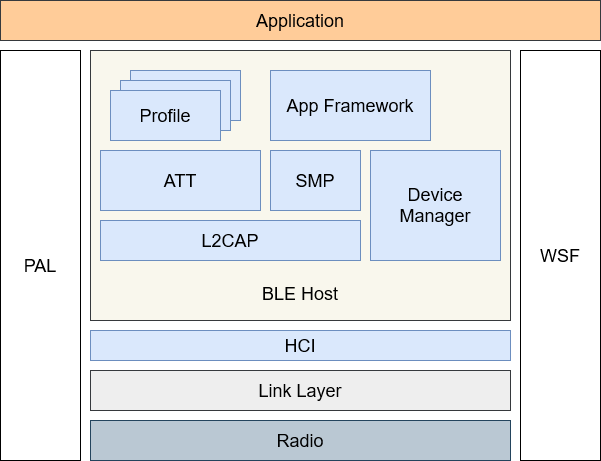
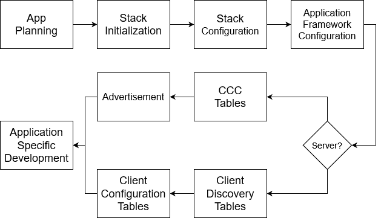
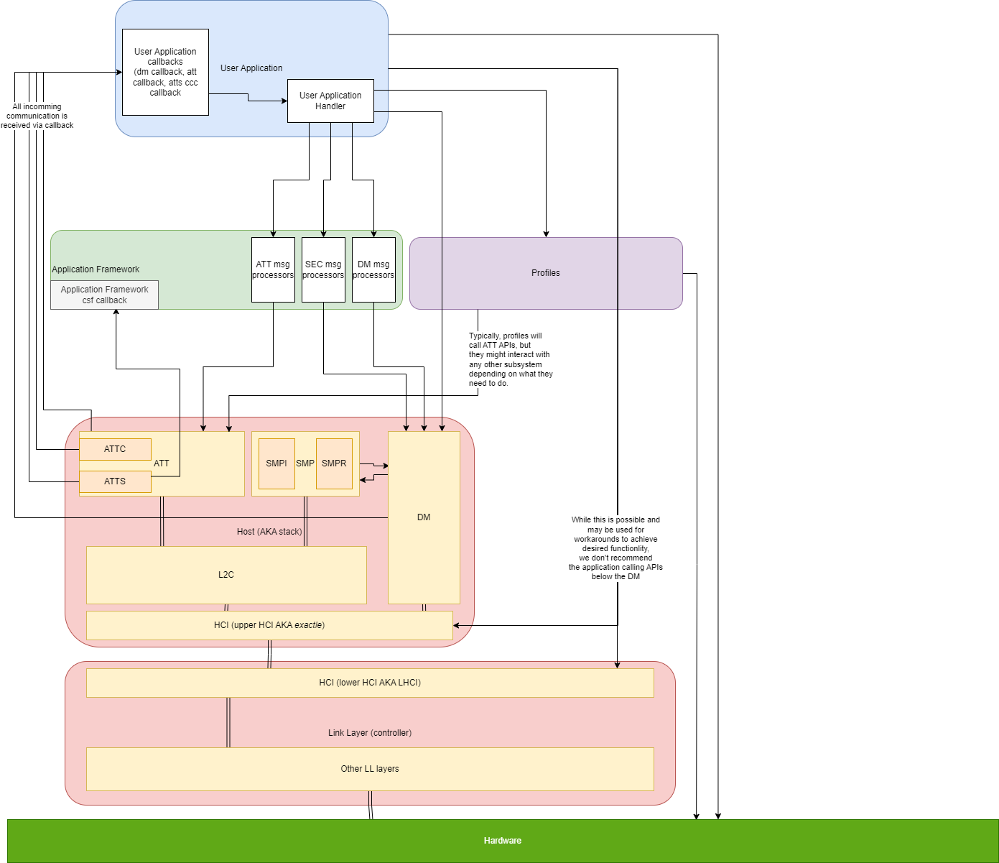
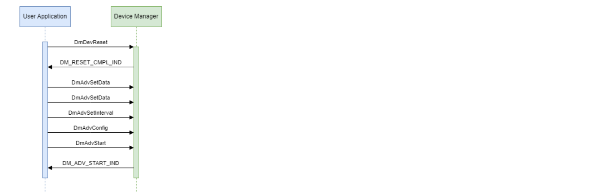
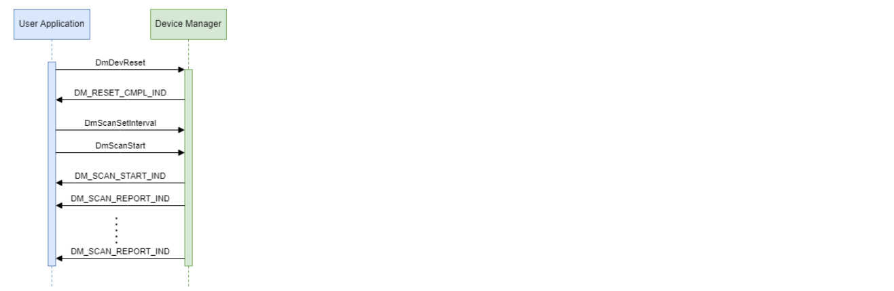

BLE Application Developer’s Guide
em | bleu BLE Application Developer’s Guide
Introduction
This document is a guide for application development using em | bleu’s Embedded Bluetooth Low-Energy protocol stack. This document is intended for readers with general knowledge in the fields of Bluetooth Low-Energy and embedded C programming.
Acronyms
The following table contains a list of acronyms and their definitions.
AES |
Advanced Encryption Standard |
|---|---|
ATT |
Attribute Protocol |
BLE |
Bluetooth Low-Energy |
CID |
L2CAP Channel ID |
CIG |
Connected Isochronous Group |
CIS |
Connected Isochronous Stream |
CMAC |
Cipher-based Message Authentication Code |
DM |
Device Manager |
ECC |
Elliptic Curve Cryptography |
GATT |
Generic Attribute Profile |
GAP |
Generic Access Profile |
HCI |
Host Control Interface |
L2CAP |
Logical Link Control and Adaptation Protocol |
PAL |
Platform Abstraction Layer |
PDU |
Protocol Data Unit |
PHY |
Physical Channel |
SMP |
Security Manager Protocol |
WSF |
Wireless Software Foundations |
Introduction to Bluetooth Low-Energy
This section contains an introduction to Bluetooth Low-Energy. Application developers should familiarize themselves with the concepts covered in this section before starting BLE application development.
BLE Address
A BLE Address is a 48-bit number that identifies a device. A BLE address can be Public or Private. Public addresses are provided by the device manufacturer, are unique to every device, and do not change. Private addresses are generated randomly by the application. A private address can be resolvable or unresolvable. Resolvable addresses are generated by hashing a random number with an identity-resolving key. The identity-resolving key is exchanged during pairing.
Services and Profiles
BLE Services and BLE Profiles define data and procedures that enable BLE device interoperability for a particular device function. A BLE Service is a container that encapsulates data. A BLE Profile defines device roles, security requirements, and procedures related to the data exposed in BLE Services.
An example of a BLE Service is the BLE Battery Service. The Battery Service exposes data containing how much battery life remains in a device’s battery. Any BLE device containing a BLE Battery Service is capable of sharing battery information with other BLE devices.
An example of a simple BLE Profile is the BLE Blood Pressure (BP) Profile. The BP Profile defines two BP device roles, BP sensor and BP collector. The BP Profile lists the requirements for each role. For example, the BP Sensor must expose a BP Service and a Device Information Service. The BP Profile defines the discovery procedure the BP collector must follow to find attributes on the BP Sensor. The BP Profile describes blood pressure procedures such as taking BP measurements, intermediate cuff pressure, etc. Finally, the BP Profile defines the security requirements for the BP Sensor and BP Collector.
Client and Server
BLE Servers are devices that contain Services. BLE Clients are devices that discover and access Services on Servers. Generally, server code is used in sensor devices that advertise and accept connections. Client code is used on sensor-collecting devices that scan and initiate connections.
A BLE device may be both a Server and a Client. However, in cases where a device can be both a client and a server, the device will function in only one role in the context of a particular connection.
Attributes and Characteristics
As stated above, a BLE Service is a container that exposes data. Service data is exposed as a plurality of attributes. Attributes consist of a handle, an attribute type (UUID), a length, and a value. Additionally, services define permissions and settings for each attribute. An attribute handle is 16-bit identifier for the attribute. The attribute type identifies the purpose of the attribute and also indicates how the attribute value is encoded. The ATT protocol defines procedures whereby BLE devices can discover, read, write, notify, and indicate attribute data.
The first attribute in a service is used to identify the service. The first attribute can have the primary service, secondary service, or included service attribute type. The data in the service’s first attribute contains a UUID that identifies the service.
The remaining attributes are generally characteristic, characteristic data, or client characteristic configuration (CCC) attributes, but may provide a less common function like including a service. A characteristic attribute identifies the UUID, properties, and an attribute handle for a particular item of data exposed by a Service. The attribute handle in the characteristic attribute references the characteristic data attribute which contains the actual data exposed by the Service. The CCC attribute is optional and is used by the client to enable notification and/or indications of changes to characteristic data.
In the BLE Battery Service example. The first attribute is a primary service attribute and contains the UUID for the battery-level service. The next 3 attributes make up the battery level characteristic. The first attribute in the characteristic is the characteristic attribute. The characteristic attribute contains the properties of the battery-level characteristic, the handle of the battery-level data, and the battery-level UUID. The second attribute is the data attribute. It contains a value that represents the battery level. The third attribute is the Client Characteristic Configuration attribute. This attribute is used to enable/disable characteristic notifications and indications from the server to the client when the battery level changes.
Reading, Writing, Indicating, and Notifying Characteristics
The ATT layer can read, write, indicate, and notify characteristics. Clients read and write characteristics. Servers notify and indicate characteristics. Notification is a process where the server sends characteristic data to the client without expecting acknowledgment from the client. The indication is a similar process, but the server expects acknowledgments.
GATT and GAP
GATT, the Generic Attribute Protocol, is a framework that defines the usage of the ATT Protocol. GATT resides in GAP, the Generic Access Profile. Together these profiles define how servers are configured, the service discovery process, how characteristics are accessed, etc.
You may notice that GATT and GAP are absent from the architecture diagram for em | bleu’s BLE Host stack. This is because the implementation of GATT and GAP functionality is spread out over the ATT and App Framework. Service discovery, attribute hashing, etc. take place in the App Framework. Reading, writing, indicating, and notifying characteristics takes place in the ATT Layer.
Advertising and Scanning
Advertising is a process whereby a device broadcasts information about itself for any device to see. Scanning is a process where a device listens for advertisements. The scan process permits the discovery of nearby devices and the function of nearby devices.
Advertisements may also be used as a method of broadcast communication.
Connecting and Connection Update
When two devices require unicast communication, they establish a connection with each other. The connection is initiated by the master (central) device. The connection is accepted by the slave (peripheral) device. One step in the connection process is the connection update procedure. The update procedure is used to reconfigure connection parameters. One parameter is the connection interval which is the frequency a device turns its receiver on to listen for data from the peer. Only one ATT message is communicated per connection interval. Therefore, a long connection interval will result in battery savings, but communication will take a long time. The converse is true for a short connection interval.
ACL and ISO
There are two types of connection-based communication channels: Asynchronous and isochronous. Asynchronous channels, also called Asynchronous Connection Logical (ACL) Transport channels, transport messages anytime an application has reason for communicating with a peer device. Examples of ACL data include sensor data (e.g. temperature, humidity, heart rate, etc.) or industrial control messages (e.g. light on/off, luminosity level, alarm messages, etc.) It is important to note that, while ACL is considered asynchronous, the physical communication does take place in structured time slots. However, a device is expected to skip most of these time slots and only transmit when there is data of interest to share.
An ISO, Isochronous, channel, on the other hand, transports a stream of data with special care to meet a specific time interval between each packet of data. Examples of ISO data are audio and video data streams.
Encryption and Authentication
Connections between two devices can be encrypted and authenticated. Encryption involves encoding messages so third parties cannot view the content of a message. Authentication is a process of ensuring the connection has been established to the intended device. Unicast communication is authenticated and encrypted using the SMP pairing process. Broadcast communication is authenticated and encrypted using the Encrypted Advertising Data procedures.
Pairing and Bonding
Pairing is a process of authenticating and encrypting an ACL link. Pairing takes place using the Security Manager Protocol. There are two pairing protocols. Legacy Pairing was the first security protocol defined in the BLE specification. BLE Secure Connections is a newer protocol that has better man-in-the-middle protection. Each protocol has four authentication procedures: just works, passkey, numeric comparison, and out-of-band key exchange. Just Works does not have a human verification step to authenticate a link. Passkey and numeric comparison involve a human entering a PIN code to compare numbers shown in two places as an authentication step. The out-of-band key exchange involves exchanging a key over a non-Bluetooth medium as a means of authentication.
After pairing, a link is encrypted. However, subsequent connections will not be secure unless encryption information is stored for future use. When two devices store security data for long-term use, the devices are said to be bonded.
em | bleu BLE Architectural Overview
The following figure illustrates em | bleu’s BLE protocol stack.
{kind=link}
BLE applications interface with GATT Profiles, Application Framework, Device Manager, and the WSF and PAL.
GATT Profiles
GATT Profiles are a plurality of BLE profiles and services. Each profile and service defines communication procedures for a particular BLE function. Example profiles include the battery level profile, heart rate profile, pulse oximeter profile, etc. For an introduction to profiles and services, see section Services and Profiles of the Introduction to Bluetooth Low Energy chapter. For instructions on implementing profiles and services, see the chapter on Creating a New Profile and Service.
Application Framework
The Application Framework, or App Layer, contains implementations of common application-level GATT, GAP, ATT, and SMP processes. Use of the App Layer is optional, but the App Layer greatly simplifies adding common BLE procedures to applications. The App Layer is configured from a plurality of configuration structures. The App Layer can be used to perform the following:
Control advertising.
Control scanning.
Control connections and connection updates.
Initiate the SMP process after a connection, or if a bond already exists, initiate the encryption procedure.
Perform Service Discovery.
Perform Service Configuration.
Store and restore peer device Service, SMP, and GAP information in the App Database.
Simulate a user interface.
Simulate target hardware.
The Application Framework consists of the following modules:
Master
The Application Framework Master implements scan, initiate connection, initiate security, initiate periodic advertisement synchronization, and other procedures that are common to devices in a central role.
Slave
The Application Framework Slave implements advertisement, accept connection, accept security, and other procedures that are common to devices in a peripheral role.
Discovery
The Application Framework Discovery module contains a state machine that performs ATT service discovery and service configuration for the application.
Database
The Application Framework Database contains bond-orientated information about devices that permits re-establishing a connection without performing security and discovery. The Database also integrates with NVM, Non-Volatile Memory, to store database information when the device is powered down.
Hardware
The Application Framework Hardware module simulates hardware such as temperature, pressure, battery level, etc. on common BLE sensor devices.
UI
The Applications Framework UI module simulates button, LED, and LCD.
Terminal
The Application Framework Terminal module provides a terminal interface for an application. em | bleu’s BLE sample applications use the terminal to display information to the user and to receive commands from a user. The terminal is useful for debugging and diagnostic purposes.
Attribute Profile
The ATT Layer implements the BLE Attribute Protocol as it is defined in the Bluetooth Core Specification. em | bleu’s ATT Layer provides support for the Extended Attribute protocol, EATT.
Security Manager
The Security Manager Protocol, SMP, consists of several state machines and action functions used for securing BLE connections as defined in the Bluetooth Core Specification. em | bleu’s SMP supports both Legacy Pairing, which was the original LE security protocol, and the newer LE Secure Connections protocol.
Device Manager
The Device Manager, DM, implements several common network procedures as they are defined in the BLE Core Specification. Examples of these procedures are establishing connections, performing connection updates, advertising, scanning, enabling constant tones, enhancing connection updates, etc.
Logical Link Control and Adaptation Protocol
The Logical Link Control and Adaptation Layer, L2CAP, is an implementation of the BLE L2CAP as defined in the Bluetooth Core Specification. em | bleu’s L2CAP supports credit-based flow control, connection-orientated channels, and the extended connection commands required by the Enhanced Attribute Protocol, EATT.
Host Control Interface
The Host Control Interface, HCI, is a standard interface for communication between a BLE Host and a BLE Controller. HCI commands and events are defined in the Bluetooth Core Specification. em | bleu’s BLE Host Stack includes two HCI implementations – Dual Chip and ExactLE.
The Dual Chip HCI is a serialized version of the HCI. The Dual Chip HCI formats and parses serial messages between the controller and the host over a serial interface such as a UART, SPI, or I2C.
ExactLE HCI is the second implementation, and it is intended for System-on-Chip (SoC) applications where em | bleu’s BLE Host and em | bleu’s BLE Controller share the same memory space. The ExactLE HCI is a thin layer of software that integrates the Host’s HCI functional interface with em | bleu’s BLE Controller API.
WSF and PAL
The WSF, Wireless Software Foundation, and PAL, Platform Abstraction Layer provide a layer of abstraction over the Operating System and Hardware Drivers respectively. This layer of abstractions aids in the portability of the em | bleu BLE stack to multiple target hardware platforms and operating systems.
Platform and Operating System
Platform Abstraction Layer
em | bleu’s BLE Host, Link Layer, and operating system interface with target hardware through a Platform Abstraction Layer, PAL. PAL-related source code can be found in the *platform *folder. Much of the PAL functionality is only used by the baseband and radio layers of the BLE Controller. However, some PAL features are useful in application development such as Peripheral I/O (UART, I2C, SPI, GPIO, Buttons, LEDs, USB, etc.). See the em | bleu BLE Host and Controller API documentation for more information about the PAL layer.
Wireless Software Foundation (WSF)
The em | bleu BLE Host accesses the Operating System via the WSF, Wireless Software Foundation API. The BLE Host requires the following functionality from the operating system:
Non-preemptive task scheduler
Dynamic memory allocation
Timer management
Event and message management
Non-volatile memory
Diagnostics
Idle time and power management
A *BareMetal *implementation of the WSF is provided with em | bleu’s BLE Host. Alternatively, the WSF API can abstract a third party’s real-time operating system. Implementations of the WSF wrapping *FreeRTOS *and *Linux *are available.
Task Handlers
The WSF provides a non-preemptive task scheduler to the BLE Host, Link Layer, and Application for the purpose of processing events, messages, and timers for a plurality of task handlers.
The *WsfOsSetNextHandler *function is used to add a task handler to the OS’s task scheduler. Once a task handler is added to the OS, the OS will call a task’s handler function in response to calls to WsfSetEvent, WsfMsgSend, WsfTimerStartSec, and WsfTimerStartMs.
Note: BLE Host task handler functions can not preempt one another. Furthermore, the task handler events in the Link Layer are time-sensitive. Therefore, care must be taken to ensure execution of application events do not block critical radio functionality in the link layer. The max execution period for a task varies depending on the connection interval and supervision timeout connection parameters.
Dynamic Memory
The WSF provides *WsfBufAlloc *and *WsfBufFree *functions to the BLE Host. WsfBufAlloc dynamically allocates a contiguous block of memory from RAM of a given size. WsfBufFree releases the memory back to the operating system.
In the BareMetal implementation of the WSF, the buffers are allocated from pools of fixed-size buffers. In the BareMetal implementation, the application must call the *WsfBufInit *function with a description of the buffer pools to initialize memory for dynamic allocation.
Timers
The WSF provides WsfTimerStartSec, WsfTimerStartMs, and *WsfTimerStop *functions to the BLE Host. TheWsfTimerStartSec and WsfTimerStartMs functions start a timer. After the given time period passes, the operating system will send the given wsfTimer_t.msg message to the task handler associated with the given wsfTimer_t.handle task handle. The WsfTimerStop function halts a timer.
Events and Messages
The WSF provides *WsfSetEvent *to notify task handlers of events. The events are implemented as bits in a 16-bit mask.
The WSF provides WsfMsgAlloc, WsfMsgFree, and *WsfMsgSend *to send structured messages to task handlers. WsfMsgAlloc allocates dynamic memory for the message. WsfMsgSend sends the message to a handler. WsfMsgFree frees dynamic memory allocated by WsfMsgAlloc. Message buffers are automatically freed after being handled. Therefore, WsfMsgFree is only necessary when the message is not sent.
Critical Sections
While WSF tasks are non-preemptive, interrupt service routines may preempt WSF tasks. The WSF provides the *WsfTaskLock *and *WsfTaskUnlock *functions to protect resources shared by tasks and ISR.
Non-Volatile Memory
The WSF provides WsfNvmReadData, WsfNvmWriteData, and *WsfNvmEraseData *to read, write, and erase non-volatile memory in Flash. The Baremetal implementation of the NVM is intended for storing BLE pairing data after two devices establish a bond. When a BLE bond is broken, all pairing data is erased. Therefore, to conserve ROM, wsf_nvm.c in the bare-metal OS does not perform garbage collection on unused NVM items.
Note: If an application requires the use of NVM beyond storing pairing data, replacing the Baremetal NVM, wsf_nvm.c, with an embedded filesystem is recommended.
Diagnostics
The WSF provides ASSERT, Trace, Terminal, and Dynamic Buffer diagnostics.
The WSF_ASSERT macro halts execution if a condition resolves to false. This macro is only compiled into the code if DEBUG=1 (or greater) is set on the Make command line.
The APP_TRACE_INFO, APP_TRACE_ERR, and APP_TRACE_WARN macros can be called from an application to output diagnostic messages to a data log. These macros are compiled into the code when DEBUG=1 (or greater) and TRACE=1 are both set on the Make command line.
The WSF_BUF_FREE_CHECK_ASSERT, WSF_BUF_STATS, WSF_BUF_STATS_HIST, WSF_BUF_ALLOC_FAIL_ASSERT conditional compile macros can be used to tune and/or diagnose dynamic memory issues.
The WSF terminal interface makes diagnostic use of a UART to display log messages in real time and process commands from the user using a serial terminal program.
Application Development
The following figure illustrates a process for BLE application development using em | bleu’s BLE Host Stack:
{kind=link}
In the Planning Phase, the app developer selects the services, profiles, and BLE features that will be used by the application.
In the Stack Initialization Phase, initialization functions associated with each BLE feature are identified and called from the application startup.
In the Stack Configuration Phase, any changes to default values of the dmCfg_t, l2cCfg_t, attCfg_t, eattCfg_t, and smpCfg_t are identified and updated. Also in the stack configuration phase, constants in ble-host/sources/stack/cfg/cfg_stack.h are modified as required.
The Application Framework Configuration Phase involves configuring the app framework and setting up event processing for the app framework. Changes to the appAdvCfg_t, appExtAdvCfg_t, appSlaveCfg_t, appMasterCfg_t, appExtMasterCfg_t, appSecCfg_t, appUpdateCfg_t, appReqActCfg_t, appDiscCfg_t, appCfg_t, appDevInfo_t are identified and updates. App layer message process functions are added to the application task handler.
In the CCC Table Development Phase, an attsCccSet_t table is built from service characteristics with CCC attributes. The table is then passed into AttsCccRegister. This only takes place on server devices that contain a BLE service with CCC attributes.
In the Advertisement Phase, the contents of the advertisement are created for the application. This only takes place on connection-based slave (peripheral) devices.
In the Client Discovery Table Phase, a table of service characteristics is constructed. This table will be used by the Application Framework to perform service discovery.
In the Client Configuration Table Phase, a table of initial characteristic values is constructed. This table will be used by the Application Framework to configure services after service discovery is completed.
The application-specific development phase will differ from application to application depending on the Core BLE features, services, and profiles required in the application.
Finally, there is a Tuning Phase where configuration parameters are tuned to their final values.
Planning for Application Development
There are many things to consider in the application planning stage. For example, will the BLE application need to interoperate with third-party devices or will the application be proprietary? Will the BLE application take a central or peripheral role? Will communication use broadcast, unicast, or both forms of communication?
Decisions made in the planning phase impact the Stack Initialization, Stack Configuration, and App Framework Configuration phases. For example, if the application will use Isochronous communication, then one or more DM ISO initialization functions such as DmIsoInit must be called in the Stack Initialization phase.
The following sections detail some of the considerations to make in the planning phase.
Interoperability
Some BLE devices can interoperate with third-party devices. Other BLE devices only function in networks of proprietary devices. Interoperable devices must strictly conform to documented BLE procedures. Furthermore, interoperable devices must go through a Qualification process where the BLE device is to tested to ensure conformance with BLE profiles and services.
The tradeoff between interoperability and proprietary involves the extra engineering work and regulatory testing to bring an interoperable device to market vs. producing a device that can only interact in a closed ecosystem.
Device Role
A device can have a slave (peripheral) role or a master (central) role. Slave devices advertise and wait for a master to initiate a connection to them. Master devices scan and initiate connections.
When developing sensor devices, the sensors themselves are generally slave devices. The sensors collect information and wait for the opportunity to provide the information to the master device. A cell phone, smartwatch, personal computer, tablet, etc. are often the master devices collecting data from sensor devices.
In some situations, a device is both a slave and a master. A smartwatch is an example. A smartwatch may collect data from running or bicycling cadence sensors. The smartwatch might be capable of collecting heart rate data - making the smartwatch a sensor too. Another example of a dual master/slave role happens when there is a requirement to include the device informative service on a central device. The central device generally scans, initiates connections, and performs service discovery. However, the central device can also advertise and accept a connection to expose the device information service.
In cases where a device is both a master and a slave, both master and slave configuration, stack initialization, event handlers, etc. must be added to the application.
Broadcast vs Unicast
Device communication can be broadcast, unicast, or both.
When broadcast communication is used, devices communicate with advertisements and do not establish a connection with one another. This communication is different from slave advertisements. Slave advertisements are static and contain basic information about the device’s capabilities. Broadcast advertisements are periodic and the data changes with each advertisement.
Before unicast communication can be used, devices must form a connection. Generally, one device is responsible for scanning and initiating a connection. The other device is responsible for advertising and accepting a connection.
Extended vs. Legacy Advertising and Scanning
Extended advertisements have a few benefits over legacy advertising. A legacy advertisement is only 31 bytes long. An extended advertisement can be 250 bytes. Extended advertising has multiple advertising sets and can advertise more than one advertisement without restarting advertising. Extended advertisements can change periodically. Extended advertisements support responses from devices that have synchronized to periodic advertisements.
The key tradeoff between legacy advertising and extended advertising involves complexity and RAM/ROM resources. Also, consider that devices only capable of legacy scanning will not receive extended advertisement reports. However, a device that supports extended advertisements and scanning can transmit or receive legacy advertisements and extended advertisements.
MTU Length
ATT message lengths are limited to the maximum transmission unit, MTU. The default MTU value is 23 bytes. Two devices can negotiate a different length MTU. An app developer should analyze all messages sent and received by all the services and profiles used by the application. Set the MTU to the longest message required by the services. If a proprietary service is being developed, consider fragmenting long messages with continuation bits and/or frame counters.
Asynchronous and Isochronous
Both broadcast and unicast communication can be asynchronous or isochronous. Asynchronous, or ACL, communication is good for sensor data or command and control packets. Isochronous communication is good for audio and/or video streaming.
Number of ATT Bearers
The legacy ATT only supports one ATT bearer. A bearer is an L2CAP channel used for ATT communication. Therefore, one ATT operation can take place at a time. An application or profile must wait for each ATT operation to complete before starting another ATT operation.
The Extended ATT, EATT, is capable of supporting multiple ATT bearers that operate simultaneously. The benefit of the EATT is each profile can independently control one or more ATT bearers without having to wait for, or even be aware of the existence of, other ATT bearers operated by other profiles. The trade-off is complexity and system resources.
Address Privacy
A BLE address can be Public or Private. When using private resolvable addressing, an application must call the DM privacy initialization functions and configure the SMP to exchange an Identity Resolving Key (IRK).
Security
An application can communicate with or without encryption. When using encryption, a link can be authenticated or unauthenticated. Link keys can be stored for future connections, or devices must perform the security process on every connection. BLE provides two security protocols: Legacy Pairing and Secure Connections Pairing. The latter has better man-in-the-middle protection. There are four security procedures: Just Works, Numeric Comparison, Passcode, and Out-of-Band pairing. There are also multiple keys that can be exchanged during the security process. The following sections cover the types of key exchange that can take place during pairing:
Long Term Key (LTK)
The DM_KEY_DIST_LTK flag indicates the LTK, Long Term Key, is requested during key exchange. The long-term key is used to encrypt a link between two devices. When an LTK is exchanged, then a bond can exist between devices. In future connections, bonded devices can skip pairing and encrypt the link with the LTK.
Identity Resolving Key (IRK)
The DM_KEY_DIST_IRK flag indicates the IRK, Identity Resolving Key, is requested during key exchange. The IRK is used to resolve and generate resolvable private addresses (RPA).
Connection Signature Resolving Key (CSRK)
The DM_KEY_DIST_CSRK flag indicates the CSRK, Connection Signature Resolving Key, is exchanged during key exchange. The CSRK is used to authenticate ATT messages with a signature. Note: Signed ATT reads and writes are generally considered to be depreciated.
Arbitration Rules for Connection Event Collisions
The em | bleu stack operates as a Slave for two simultaneous connections and is responsible for fulfilling connection events for both connections simultaneously. The scheduling is done using two different “Baseband Operation Descriptors (BOD).” When a new connection event is scheduled, it is inserted into the scheduler’s queue using the SchInsertAtDueTime function. This function checks if there is already an existing operation scheduled at that time and, if so, calls a preconfigured “conflict resolution callback” called lctrConnResolveConflict-
The lctrConnResolveConflict function handles the conflict resolution with the following priority:
If the existing operation is not a connection-related event, the new operation is prioritized.
If the new operation is still being initialized, the existing operation is prioritized.
If the existing operation’s supervisor timeout is imminent (within 1 second), the existing operation is prioritized.
If the new operation’s supervisor timeout is imminent (within 1 second), the new operation is prioritized.
If the existing operation has a pending active LLCP (Logical Link Control Protocol), the existing operation is prioritized.
If the new operation has a pending active LLCP, the new operation is prioritized.
If the existing operation has pending data, the existing operation is prioritized.
If the new operation has pending data, the new operation is prioritized.
If the existing operation’s connection interval is greater than 4 times the new operation’s connection interval, the existing operation is prioritized.
If the new operation’s connection interval is greater than 4 times the existing operation’s connection interval, the new operation is prioritized.
If none of the above prioritizations occur, the existing operation will run, and the new operation will be skipped.
Stack Initialization
To conserve system resources, the subsystems of em | bleu’s BLE Host are configurable at compile-time. The process of configuring BLE Host subsystems involves starting WSF task handlers and calling stack initialization functions at application startup.
The following is a list of task handlers that may be started in the Stack Initialization procedure:
TerminalHandler
The TerminalHandler facilitates terminal I/O processing. Terminal I/O aids in the debugging and development of applications by directing data logging to a serial UART for display in a dumb Terminal. Additionally, the terminal I/O can process commands entered by the user into the terminal.
The TerminalInit, AppTerminalInit, and TerminalRegisterUartTxFunc must also be called at startup when including terminal I/O functionality.
The TerminalHandler is started with the following call:
TerminalInit(WsfOsSetNextHandler(TerminalHandler));
HciHandler
The HciHandler facilitates the processing of HCI events from the controller. The HciHandler is required by all BLE Host applications. The HciHandler is started with the following call:
HciHandlerInit(WsfOsSetNextHandler(HciHandler));
DmHandler
The DmHandler is required by the Device Manager. Most BLE Host applications require the DmHandler. The exception is applications that are designed to only interface with the HCI layer.
The main function of the DmHandler is to provide a context switch from the application task to the DM task on calls to DM API functions. The DmHandler is started with the following call:
DmHandlerInit(WsfOsSetNextHandler(DmHandler));
L2cSlaveHandler
The L2cSlaveHandler is required by devices that accept L2CAP channels. These are generally devices that advertise and accept ACL connections. The L2cSlaveHandler is not required by devices that initiate the creation of L2CAP channels (referred to as master devices) unless the master device will operate in a dual slave/master role. The L2cSlaveHandler is started with the following call:
L2cSlaveHandlerInit(WsfOsSetNextHandler(L2cSlaveHandler));
L2cCocHandler
The L2cCocHandler is required by devices that utilize connection-oriented-channels. These channels are generally only used by applications that make use of the EATT. The L2cCocHandler is started with the following call:
L2cCocHandlerInit(WsfOsSetNextHandler(L2cCocHandler));
AttHandler
The AttHandler is required by devices that use the GATT protocol. Most applications will require the AttHandler. There are two exceptions. The first is applications that have their own communication protocol that sits over the L2CAP. The second is a broadcast application that only communicates via advertisements. AttHandler is started with the following call:
AttHandlerInit(WsfOsSetNextHandler(AttHandler));
SmpHandler
The SmpHandler is required by devices that use the BLE Security Manager Protocol for encryption and authentication. Most applications will require the SmpHandler. SmpHandler is started with the following call:
SmpHandlerInit(WsfOsSetNextHandler(SmpHandler));
AppHandler
The AppHandler is required by all applications. The application executes in the context of the AppHandler. The AppHandler is started with the following call:
AppHandlerInit(WsfOsSetNextHandler(AppHandler));
WdxsHandler
The WdxsHandler is required by applications using the WDXS, Wireless Data Exchange, service. The WDX is a em | bleu proprietary service that is generally used to expose a simple filesystem over a BLE ACL link.
The WdxsHandler is started with the following call:
WdxsHandlerInit(WsfOsSetNextHandler(WdxsHandler));
The following is a list of initialization functions that may be called in the Stack initialization procedure:
AppTerminalInit
AppTerminalInit is called to initialize the debug terminal.
SecInit
SecInit is called to initialize the security subsystem. SecInit must be initialized for the BLE Host to encrypt and authenticate a connection. There are three additional security initialization functions:
SecAesInit
SecCmacInit
SecEccInit
When using the older BLE Legacy Pairing security protocol, the BLE Host only requires SecInit and SecAesInit.
When using BLE Secure Connections, the BLE Host requires all four security initialization functions.
HciCoreIsoInit
HciCoreIsoInit initializes HCI ISO resources. HciCoreIsoInit is required in applications that use Isochronous communication such as audio streams.
DmDevPrivInit
DmDevPrivInit initializes the DM to support device privacy mode. In device privacy mode, a device is able to generate random resolvable addresses.
DmAdvInit, DmExtAdvInit, DmExtPerAdvWithRspInit
DmAdvInit initializes the DM to support legacy advertising. DmExtAdvInit initializes the DM to support legacy, extended advertising, and periodic advertising. DmExtPerAdvWithRspInit initializes the DM to support legacy advertising, extended advertising, and periodic advertising with a response. No more than one of these functions should be called.
DmScanInit, DmExtScanInit, DmExtPawrScanInit
DmScanInit initializes the DM to support legacy scanning. DmExtScanInit initializes the DM to support legacy and extended scanning and periodic advertising scanning. DmExtPawrScanInit initializes the DM to support legacy and extended scanning and periodic advertising with response scanning. No more than one of these functions should be called.
DmConnInit
DmConnInit initializes the connection manager.
DmConnSlaveInit, DmExtConnSlaveInit
DmConnSlaveInit initializes the DM to support accepting legacy connections. DmExtConnSlaveInit initializes the DM to support accepting both legacy and extended connections. No more than one of these functions should be called.
DmConnMasterInit, DmExtConnMasterInit, DmExtPawrConnMasterInit
DmConnMasterInit initializes the DM to support the initiation of legacy connections. DmExtConnMasterInit initializes the DM to support the initiation of legacy and extended connections. DmExtPawrConnMasterInit initializes the DM to support legacy and extended connections and opens an ACL connection to a device synchronized via periodic advertising with a response train.
DmSecInit, DmSecLescInit
DmSecInit initializes the DM to support legacy pairing. DmSecLescInit initializes the DM to support legacy pairing and LE Secure Connections.
DmPrivInit
DmPrivInit initializes the DM to support the process of resolving private addresses and of adding private addresses to the resolving list.
DmPhyInit
DmPhyInit initializes the DM to support multiple PHY modes including 2Meg, Coded S2, and Coded S8 PHY modes.
DmConnCteInit
DmConnCteInit initializes the DM to support Constant Tone Extensions.
DmPastInit
DmPastInit initializes the DM to support Periodic Advertising Sync Transfer (PAST).
DmCisInit
DmCisInit initializes the DM to support Connected Isochronous Streams (CIS).
DmCisMasterInit
DmCisMasterInit initializes the DM to support initiating CIS connections.
DmCisSlaveInit
DmCisSlaveInit initializes the DM to support accepting CIS connections.
DmBisMasterInit
DmBisMasterInit initializes the DM to support initiating BIS connections.
DmBisSlaveInit
DmBisSlaveInit initializes the DM to support accepting BIS connections.
DmIsoInit
initializes the DM to support Isochronous Streams.
DmEcuInit
initializes the DM to support enhanced connection updates (ECU).
DmPcInit
initializes the DM to support Power Control (PC).
L2cInit
L2cInit initializes the L2CAP. Generally, all applications require the L2CAP. The exception is applications developed to only make use of HCI functions.
L2cSlaveInit
L2cSlaveInit initializes the L2CAP to support accepting L2CAP channels.
L2cMasterInit
L2cMasterInit initializes the L2CAP to support initiating L2CAP channels.
L2cCocInit
L2cCocInit initializes the L2CAP to support Connection Orientated Channels. Generally, connection-oriented channels are only used in EATT. A proprietary non-GATT protocol may also make use of COC.
AttsInit
AttsInit initializes the ATT to support ATT as a server.
AttsIndInit
AttsIndInit initializes the ATT to support sending ATT indications and notifications.
AttcInit
AttcInit initializes the ATT to support ATT as a client.
AttcSignInit
AttcSignInit initializes the ATT to support signed writes as a client. This ATT feature is considered to be depreciated.
AttsSignInit
AttsSignInit initializes the ATT to support signed writes as a server. This ATT feature is considered to be depreciated.
AttsCsfInit
AttsCsfInit initializes the ATT to support Client Supported Features.
SmpiScInit
SmpiScInit initializes the SMP to support initiating security for legacy pairing and LE Secure Connections.
Note: An app should only call SmpiInit or SmpiScInit, not both.
SmprScInit
SmprScInit initializes the SMP to support accepting security for legacy pairing and LE Secure Connections.
Note: An app should only call SmprInit or SmprScInit, not both.
SmpiInit
SmpiInit initializes the SMP to support initiating security for legacy pairing only.
SmprInit
SmprInit initializes the SMP to support accepting security for legacy pairing only.
Stack Configuration
This section details BLE Host Stack Configuration structures and constants. The stack configuration data structures have default values in cfg_stack.c, but are referenced by a pointer in the stack and can be overridden in the application.
dmCfg_t
The pDmCfg is depreciated.
l2cCfg_t
The pL2cCfg is used to set the L2CAP request timeout in seconds.
attCfg_t
The pAttCfg is used to set configuration parameters in the ATT Layer. The following can be configured in pAttCfg:
Discovery idle timeout.
Default MTU length.
Transaction timeout in seconds.
Max number of queued prepared writes.
eattCfg_t
The pEattCfg is used to set configuration parameters in the EATT Layer. The following can be configured in pEattCfg:
The EATT MTU
The EATT MPS
Boolean to open EATT channels automatically on connect
Boolean that is true to require authorization before opening EATT channels.
The minimum security level to use EATT channels
The number of EATT channels per connection.
The priority table for the EATT channels.
The pPriorityTblcan be used in one of two ways. Setting the priority table to an array of integers provides a priority level for each EATT channel. The EATT will only allocate a channel if the priority passed into an EATT API function is less than or equal to the priority for the channel. If the priority table is NULL, then the priority passed into the EATT API function corresponds to the channel ID.
For example, if there are 4 EATT channels and the pPriorityTbl is set to {1, 1, 2, 2}. Then calling an EATT API function with priority 1 will result in the use of the first or second CID - provided one is available. If pPriorityTbl is set to NULL, calling an EATT API with priority 1 will always use the second CID. If the second CID is not available, then the API call will fail.
smpCfg_t
The pSmpCfg is used to set configuration parameters in the SMP. The following can be configured in pSmpCfg:
/O Capabilities
Min key length
Max Key length
Repeated attempts configuration
The min and max key length only apply to legacy pairing. The key length in LE Secure Connections is always 16.
The repeated attempts algorithm calculates a time to delay future pairing attempts after a failed pairing. The BLE Core specification requires the SMP to implement this delay before reattempting pairing after a failed attempt. However, the BLE Core specification leaves the details of how this delay is calculated to the application. em | bleu’s SMP algorithm is configurable. This algorithm exponentially increases the time before pairing can be reattempted with each paired attempt. The algorithm exponentially decreases the time if no additional failure happens.
The SMP uses the I/O Capabilities to negotiate the type of security algorithm used in the SMP process. For more information, see section 2.3 Pairing Methods of Vol 3, Part H: Security Manager Specification of the Core BLE specification.
DM_CONN_MAX
DM_CONN_MAX sets the maximum simultaneous connections that can be opened at one time on a device.
DM_SYNC_MAX
DM_SYNC_MAX sets the maximum number of periodic advertisements a device can synchronize at one time.
DM_NUM_ADV_SETS
DM_NUM_ADV_SETS sets the maximum number of extended advertisement sets that can be configured in the controller at one time. This value is set to 1 when legacy advertising is being used.
DM_NUM_PHYS
DM_NUM_PHYS sets the maximum number of PHY configurations used by the device for establishing connections and for scanning for advertisements. The PHYs can be configured as 1M, 2M, Coded 2S and Coded 8S.
DM_CIG_MAX
DM_CIG_MAX sets the max number of Connected Isochronous Groups, CIG.
DM_CIS_MAX
DM_CIS_MAX sets the max number of Connected Isochronous Streams, CIS.
DM_BIG_MAX
DM_BIG_MAX sets the max number of Broadcast Isochronous Groups, BIG.
DM_BIS_MAX
DM_BIS_MAX sets the max number of Broadcast Isochronous Streams, BIS.
L2C_COC_CHAN_MAX
L2C_COC_CHAN_MAX sets the maximum number of L2CAP connection-oriented channels shared by all device connections.
L2C_COC_REG_MAX
L2C_COC_REG_MAX sets the maximum number of connection-oriented channel registered clients.
ATT_NUM_SIMUL_WRITE_CMD
ATT_NUM_SIMUL_WRITE_CMD sets the maximum number of simultaneous ATT to write commands per bearer per device connection.
ATT_NUM_SIMUL_NTF
ATT_NUM_SIMUL_NTF sets the maximum number of simultaneous ATT notifications.
EATT_CONN_CHAN_MAX
EATT_CONN_CHAN_MAX sets the maximum number of EATT connections per device connection.
SMP_DB_MAX_DEVICES
SMP_DB_MAX_DEVICES sets the maximum number of devices in the SMP database. The SMP database is used to track devices that have previously tried to pair but failed to complete pairing.
HciSetMaxRxAclLen
The HciSetMaxRxAclLen function is used to set the maximum length ACL packet that can be received by the HCI.
Application Framework Event Handling and Configuration
The application framework, also referred to as AF or app layer, implements several common BLE procedures. Each procedure is configurable with a configuration structure in app_api.h. Unlike the stack initialization, there are no default values for these configuration structures. The application must define a configuration structure for every AF module used in the application.
App Handler Configuration
The application task is responsible for forwarding ATT and DM messages to the AF. An example app handler function for a device in a Slave (Peripheral) Role taken from the DATS sample application follows. You can also compare this function to the DatcHandler function and see the different AF message handling used in a device in both the Master (Central) and Slave (Peripheral) Roles.
void DatsHandler(wsfEventMask_t event, wsfMsgHdr_t *pMsg)
{
if (pMsg != NULL)
{
APP_TRACE_INFO1("Dats got evt %d", pMsg->event);
/* process ATT messages */
if (pMsg->event >= ATT_CBACK_START && pMsg->event <= ATT_CBACK_END)
{
/* process server-related ATT messages */
AppServerProcAttMsg(pMsg);
}
/* process DM messages */
else if (pMsg->event >= DM_CBACK_START && pMsg->event <= DM_CBACK_END)
{
/* process advertising and connection-related messages */
AppSlaveProcDmMsg((dmEvt_t *) pMsg);
/* process security-related messages */
AppSlaveSecProcDmMsg((dmEvt_t *) pMsg);
/* process server-related DM messages */
AppServerProcDmMsg(pMsg, DM_ROLE_SLAVE);
#if WDXS_INCLUDED == 1
/* process WDXS-related messages */
WdxsProcDmMsg((dmEvt_t*) pMsg);
#endif /* WDXS_INCLUDED */
}
/* perform profile and user interface-related operations */
datsProcMsg((dmEvt_t *) pMsg);
}
}
The following sections detail functions that may be called to process system messages in the various modules in the AF. To conserve system resources, only include functions for AF modules required by the application.
AppDiscProcAttMsg and AppDiscProcDmMsg
The AppDiscProcAttMsg and AppDiscProcDmMsg handlers process ATT and DM messages respectively for the purpose of service discovery and service configuration. These functions should be included in applications that are Clients of BLE Services and perform service discovery.
AppServerProcAttMsg
The AppServerProcAttMsg handler processes ATT messages for the purpose of calculating a service database hash and handling service-changed GATT messages. This function should be included in applications that support database hash and service change.
AppServerProcDmMsg
The AppServerProcDmMsg handler stores the LTK in the app database on pair complete. This function should be processed in all applications that perform pairing and store the LTK in the app database.
AppMasterProcDmMsg
The AppMasterProcDmMsg handler is used to control scanning, managing connections, and resolving private addresses. This function should be used on devices that are Clients of BLE services and are in a central role.
AppMasterSecProcDmMsg
The AppMasterSecProcDmMsg handler manages the SMP process for devices in a central role.
AppSlaveProcDmMsg
The AppSlaveProcDmMsg is used to control accepting connection and connection updates in devices in the peripheral role.
AppSlaveSecProcDmMsg
The AppSlaveSecProcDmMsg handler manages the SMP process for devices in a peripheral role.
Application Framework Configuration
Each feature of the AF has a configuration structure. Pointers to these configuration structures must be set in the application handler init functions. The following example of setting up the AF configuration structure pointers is taken from the DATS sample application’s DatsHandlerInitfunction.
/* Set configuration pointers */
pAppSlaveCfg = (appSlaveCfg_t *) &datsSlaveCfg;
pAppAdvCfg = (appAdvCfg_t *) &datsAdvCfg;
pAppSecCfg = (appSecCfg_t *) &datsSecCfg;
pAppUpdateCfg = (appUpdateCfg_t *) &datsUpdateCfg;
pSmpCfg = (smpCfg_t *) &datsSmpCfg;
pAttCfg = (attCfg_t *) &datsAttCfg;
The following sections contain more information about the configuration structures for each AF module.
appAdvCfg_t
The pAppAdvCfg is used to set the advertising duration and interval for up to APP_ADV_NUM_CFG advertisements when using legacy advertising. The pAppAdvCfg is used in conjunction with the AppAdvSetData, AppAdvSetAdValue, AppAdvStart, and AppAdvStop functions.
appExtAdvCfg_t
The pAppExtAdvCfg is used to define extended advertising sets. DM_NUM_ADV_SETS number of extended advertising sets are configured. The pAppExtAdvCfg is used in conjunction with the AppExtAdvSetData, AppExtAdvStart, AppExtAdvStop, AppExtAdvSetAdValue, AppExtAdvAppendAdValue, and AppExtSetAdvType functions.
appSlaveCfg_t
The pAppSlaveCfg is used to set the maximum number of connections on a slave (peripheral) device.
appMasterCfg_t
The pAppMasterCfg is used to set scan parameters for legacy scanning on devices in the central role.
appExtMasterCfg_t
The pAppExtMasterCfg is used to set extended scan parameters for scanning for extended advertisements on devices in the central role.
appSecCfg_t
The pAppSecCfg is used to set security parameters on devices in both the central and peripheral roles. The following configuration values can be set:
The authentication and bonding flags. These flags indicate a bond is being requested, if man-in-the-middle (MITM) authenticated pairing is being requested, if secure connections (SC) are requested, and if key press notifications are requested (KP).
DM_AUTH_BOND_FLAG
DM_AUTH_MITM_FLAG
DM_AUTH_SC_FLAG
DM_AUTH_KP_FLAG
A mask of keys for the initiator to distribute.
DM_KEY_DIST_LTK
DM_KEY_DIST_IRK
DM_KEY_DIST_CSRK
A mask of keys for the responder to distribute.
A boolean that is true if Out-Of-Band pairing is enabled.
A boolean that is true if security should be automatically initiated on connection.
appUpdateCfg_t
The pAppUpdateCfg defines the connection parameters that are desired by the device in the connection update procedure.
Connection Interval
The connection interval defines how frequently the controller wakes to communicate. The pAppUpdateCfg contains a min and max connection interval. The app layer requests these values in the connection update procedure, but the peer is not required to acquiesce.
Connection Latency
The connection latency, also called the slave or peripheral latency, is the number of connection events to skip on the slave device. This field gives the slave the option of sleeping for longer periods of time when the connection interval is short by skipping intervals.
Supervision Timeout
The supervision timeout is the maximum period of time to wait for communication from a peer. After the supervision timeout is reached the peer is considered no longer connected.
appReqActCfg_t
The pAppReqActCfg contains an action to perform on a remote connection parameter request. The actions can be APP_ACT_ACCEPT, APP_ACT_REJECT, or APP_ACT_NONE.
appDiscCfg_t
The pAppDiscCfg contains configuration for the discovery on master (central) devices. The pAppDiscCfg has the following parameters:
A boolean that waits for a secure connection before starting discovery if true.
A boolean that reads the att database hash to check for a change before performing discovery.
appCfg_t
The pAppCfg contains miscellaneous configurations used in client applications. The pAppCfg has the following parameters:
A boolean that is true to abort discovery if any required service is not found.
A boolean to disconnect if an ATT transaction times out.
Server CCC Tables
Server CCC tables are only used in applications that expose a service as a server. Generally, services are only exposed on on slave (peripheral) devices, but sometimes a master (central) device exposes a service too. An example Server CCC Table from the fit application follows:
/*! enumeration of client characteristic configuration descriptors */
enum
{
FIT_GATT_SC_CCC_IDX, /*! GATT service, service changed characteristic */
FIT_HRS_HRM_CCC_IDX, /*! Heart rate service, heart rate monitor characteristic */
FIT_BATT_LVL_CCC_IDX, /*! Battery service, battery level characteristic */
FIT_RSCS_SM_CCC_IDX, /*! Runninc speed and cadence measurement characteristic */
FIT_NUM_CCC_IDX
};
/*! client characteristic configuration descriptors settings, indexed by above enumeration */
static const attsCccSet_t fitCccSet[FIT_NUM_CCC_IDX] =
{
/* cccd handle value range security level */
{GATT_SC_CH_CCC_HDL, ATT_CLIENT_CFG_INDICATE, DM_SEC_LEVEL_NONE}, /* FIT_GATT_SC_CCC_IDX */
{HRS_HRM_CH_CCC_HDL, ATT_CLIENT_CFG_NOTIFY, DM_SEC_LEVEL_NONE}, /* FIT_HRS_HRM_CCC_IDX */
{BATT_LVL_CH_CCC_HDL, ATT_CLIENT_CFG_NOTIFY, DM_SEC_LEVEL_NONE}, /* FIT_BATT_LVL_CCC_IDX */
{RSCS_RSM_CH_CCC_HDL, ATT_CLIENT_CFG_NOTIFY, DM_SEC_LEVEL_NONE} /* FIT_RSCS_SM_CCC_IDX */
};
The ATT module that manages CCC values must store CCC values associated with 16-bit handles in an array. Therefore, an indirection table must be made in the application that maps the 16-bit handle to a zero-based index. Additionally, the indirection table also contains information about if the CCC is for ATT indicate, ATT notify or both, and also the required security level for writing the CCC value. The CCC table is registered with the ATT using the AttsCccRegister function.
Server Advertisement
Advertisements are transmitted by slave (peripheral) devices. Advertisements are constructed from advertising data (AD) values. Each value has a 1-byte length field followed by a 1-byte AD type field followed by data associated with the AD type. An example from the fit sample application follows:
/*! advertising data, discoverable mode */
static const uint8_t fitAdvDataDisc[] =
{
/*! flags */
2, /*! length */
DM_ADV_TYPE_FLAGS, /*! AD type */
DM_FLAG_LE_GENERAL_DISC | /*! flags */
DM_FLAG_LE_BREDR_NOT_SUP,
/*! tx power */
2, /*! length */
DM_ADV_TYPE_TX_POWER, /*! AD type */
0, /*! tx power */
/*! service UUID list */
9, /*! length */
DM_ADV_TYPE_16_UUID, /*! AD type */
UINT16_TO_BYTES(ATT_UUID_HEART_RATE_SERVICE),
UINT16_TO_BYTES(ATT_UUID_RUNNING_SPEED_SERVICE),
UINT16_TO_BYTES(ATT_UUID_DEVICE_INFO_SERVICE),
UINT16_TO_BYTES(ATT_UUID_BATTERY_SERVICE)
};
The first value in the advertising data is the advertisement flags. In this case, the flags indicate that the device is in general discoverable mode and BR/EDR is not supported. The next advertising value is the TX power. The final value contains the UUID of the services supported by the fit application. The advertisement is stored in the app layer by calling the *AppAdvSetData or AppExtAdvSetData *function depending on the use of legacy or extended advertising respectively.
An application can start advertising by calling the AppAdvStart or AppExtAdvStart function. An application can stop advertising by calling the AppAdvStop or AppExtAdvStop function. When advertising starts, the DM notifies the application that advertising has started using the DM_ADV_START_IND (legacy) or DM_ADV_SET_START_IND (extended) event. When advertising stops, the DM notifies the application that advertising has stopped using the DM_ADV_STOP_IND (legacy) or DM_ADV_SET_STOP_IND (extended) event.
For a list of advertisement types (AD types), see the dm_api.h header file.
Alternative to declaring const advertising data, an application can use the *AppAdvSetAdValue *API to add or modify the data associated with an advertising type.
Client Discovery Data
Client Discovery Data consists of tables that govern the Service Discovery process in the App Layer. The following code is an example of client discovery data taken from the watch sample application in ble-apps/sources/watch/watch_main.c.
/*! Discovery states: enumeration of services to be discovered */
enum
{
WATCH_DISC_SLAVE_GATT_SVC, /* GATT service */
WATCH_DISC_SLAVE_CTS_SVC, /* Current Time service */
WATCH_DISC_SLAVE_ANS_SVC, /* Alert Notification service */
WATCH_DISC_SLAVE_PASS_SVC, /* Phone Alert Status service */
WATCH_DISC_SLAVE_SVC_MAX /* Discovery complete */
};
/*! the Client handle list, watchCb.hdlList[], is set as follows:
*
* ------------------------------- <- WATCH_DISC_GATT_START
* | GATT handles |
* |... |
* ------------------------------- <- WATCH_DISC_CTS_START
* | CTS handles |
* | ... |
* ------------------------------- <- WATCH_DISC_ANS_START
* | ANS handles |
* | ... |
* ------------------------------- <- WATCH_DISC_PASS_START
* | PASS handles |
* | ... |
* -------------------------------
*/
/*! Start of each service's handles in the the handle list */
#define WATCH_DISC_GATT_START 0
#define WATCH_DISC_CTS_START (WATCH_DISC_GATT_START + GATT_HDL_LIST_LEN)
#define WATCH_DISC_ANS_START (WATCH_DISC_CTS_START + TIPC_CTS_HDL_LIST_LEN)
#define WATCH_DISC_PASS_START (WATCH_DISC_ANS_START + ANPC_ANS_HDL_LIST_LEN)
#define WATCH_DISC_SLAVE_HDL_LIST_LEN (WATCH_DISC_PASS_START + PASPC_PASS_HDL_LIST_LEN)
/*! Pointers into handle list for each service's handles */
static uint16_t *pWatchSlvGattHdlList = &watchCb.hdlSlaveList[WATCH_DISC_GATT_START];
static uint16_t *pWatchCtsHdlList = &watchCb.hdlSlaveList[WATCH_DISC_CTS_START];
static uint16_t *pWatchAnsHdlList = &watchCb.hdlSlaveList[WATCH_DISC_ANS_START];
static uint16_t *pWatchPassHdlList = &watchCb.hdlSlaveList[WATCH_DISC_PASS_START];
The first table is an enumeration of the services that will be discovered during the service discovery process. In the service discovery process, the App Layer will discover services and attributes on the peer and fill in a list of attribute handles.
The WATCH_DISC_GATT_START, WATCH_DISC_CTS_START, etc. define the starting location to store attribute handles in hdlSlaveList for each service. The pWatchSlvGattHdlList, pWatchCtsHdlList, etc. are pointers to these starting locations.
The discovery process is implemented in the App Layer, but the app layer calls the watchDiscCback callback at each step in the discovery process. When discovery of a particular service ends, the callback will be called with APP_DISC_CMPL or APP_DISC_FAILED. The application can choose to move on to the discovery configuration state, or the application can choose to perform discovery on another service. In the following code, the watch app begins TIP discovery after CTS discovery ends.
if (watchCb.discState == WATCH_DISC_SLAVE_CTS_SVC)
{
/* discover current time service */
TipcCtsDiscover(connId, pWatchCtsHdlList);
}
When restoring service handles from NVM, the handle list will not be filled by calls into the profile to perform service discovery, rather, the handles will be copied from the app database. Some profiles store a pointer to the attribute handle list in a control block in the profile. These profiles expose an API to set the handle list without performing discovery. This is more common in audio and mesh profiles than in sensor profiles. In these cases, the handles should be set on APP_DISC_CFG_CONN_START. See BapcAscSetHandles as an example.
Client Configuration Data
On client devices, after Service Discovery is complete, the app layer performs service configuration. In the service configuration step attributes are read and/or written according to a table of attcDiscCfg_t. An example table from the watch sample application follows:
/* List of characteristics to configure on connection setup */
static const attcDiscCfg_t watchDiscConnCfgList[] =
{
/* Read: ANS Supported new alert category */
{NULL, 0, (ANPC_ANS_SNAC_HDL_IDX + WATCH_DISC_ANS_START)},
/* Read: ANS Supported unread alert category */
{NULL, 0, (ANPC_ANS_SUAC_HDL_IDX + WATCH_DISC_ANS_START)},
/* Read: PASS Alert status */
{NULL, 0, (PASPC_PASS_AS_HDL_IDX + WATCH_DISC_PASS_START)},
/* Write: ANS Control point "Enable New Alert Notification" */
{watchAncpEnNewVal, sizeof(watchAncpEnNewVal), (ANPC_ANS_ANCP_HDL_IDX + WATCH_DISC_ANS_START)},
/* Write: ANS Control point "Notify New Alert Immediately" */
{watchAncpNotNewVal, sizeof(watchAncpNotNewVal), (ANPC_ANS_ANCP_HDL_IDX + WATCH_DISC_ANS_START)},
/* Write: ANS Control point "Enable Unread Alert Status Notification" */
{watchAncpEnUnrVal, sizeof(watchAncpEnUnrVal), (ANPC_ANS_ANCP_HDL_IDX + WATCH_DISC_ANS_START)},
/* Write: ANS Control point "Notify Unread Alert Status Immediately" */
{watchAncpNotUnrVal, sizeof(watchAncpNotUnrVal), (ANPC_ANS_ANCP_HDL_IDX + WATCH_DISC_ANS_START)}
};
When the pValue parameter of attcDiscCfg_t is NULL, the configuration operation is a read. The value length is ignored on a read. The handle index is the index of the attribute relative to the service’s attribute handles plus the starting point for the service’s handles in the global array of handles.
When the pValue parameter is not NULL, the configuration operation is written. The value pointed to by pValue is written to the server’s service attribute with the given handle.
BLE Data Flow
Below is a diagram outlining how data flows between HW, BLE stack, AF, and user application. Note that all incoming communications from the BLE stack first goes to the user application via event callback. Outgoing communication from the user application is done via combination of AF, profile, and DM API calls. For non-BLE related traffic, other data paths may exist.
{kind=link}
Note: The user might talk to the HW directly only when using non-BLE related HW. For example, a transport or a HW peripheral.
Application Framework (AF) and Device Manager (DM) Feature Comparison
Feature (Y = supported, N = not supported) |
AF |
DM |
|---|---|---|
ATT Management |
Y |
N |
Advertising Management (legacy & extended) |
Y |
Y |
Connection Management |
Y |
Y |
Connection PHY Preferences Y |
N |
Y |
Direction Finding |
N |
Y |
Filter Accept List |
N |
Y |
LE Isochronous Channels |
N |
Y |
LE Power Control |
N |
Y |
LE Privacy Management |
N |
Y |
Pairing Management |
Y |
Y |
Periodic Advertising Sync Transfer |
N |
Y |
Periodic List |
N |
Y |
Persistant Bonding Info |
Y |
N |
Resolving List |
N |
Y |
Security Management |
Y |
Y |
Service Discovery |
Y |
N |
Syncronization Management |
Y |
Y |
Vendor Specific Functionality |
N |
Y |
Adding Application-Specific BLE Features to an Application
Before delving into the process of adding specific features to an application, it is essential to first gain an understanding of the Application Framework (AF) and the Device Manager (DM), as well as when and how to utilize each of them. The AF serves as a comprehensive foundation for application development, while the DM plays a crucial role in managing device-related functionalities. This section aims to provide a detailed overview of both the AF and DM, including a comprehensive list of features offered by each layer and an architectural overview. By familiarizing ourselves with these key components, we can effectively proceed with incorporating application-specific BLE features into our application.
AF Capabilities
This section explores the various capabilities of the AF.
Bonding Information Management
The AF maintains a persistent RAM database comprising details of all bonded devices, including but not limited to, BD Address, type, keys, ATTS, ATTC, and profile information. Consult the appDb_t section in the profiles API documentation for further details. As of now, the AF does not support storage of bonding information in Non-Volatile Memory (NVM).
Advertising Management
The AF automates advertising functionality for devices operating in the peripheral role using both legacy and extended advertising. This encompasses advertising configurations such as intervals, durations, PDUs, extended advertising events, and advertising data for different modes.
Additionally, the AF provides discoverable, connectable, and auto modes for advertising. When using the auto mode, advertising is set to discoverable or connectable based on the bonding information.
The AF currently does not support:
User-defined filter policies (must be configured via the DM)
Synchronization Management
The AF can be configured to synchronize with periodic advertising from specified advertisers.
Scanning Management
For devices in the central role, the AF handles scanning-related functionalities, including scanning intervals, windows, durations, GAP discovery modes, scan types, and scan periods.
The AF currently does not support:
Configuring scanning to filter duplicates (it will always filter duplicates).
User defined filter policies (filter accept list filtering).
Service and Characteristic Discovery
In the central role, the AF manages service discovery, which can either occur automatically or be initiated by the user application. Secure connections can also be required before initiating service discovery. In addition to comminicating with the DM, the AF interacts with ATT to perform discovery operations. The interactions between ATT and the AF are somewhat complex making the AF an attractive option for central devices requiring service discovery.
Connection Management
The AF takes charge of connection parameter updates, multi-connection management, and bonding preferences. It also maintains connection-related data in its database.
Security Management
The AF can manage pairing, encryption, and other security procedures either automatically or upon instruction from the user application.
Additional RPA Resolution
The AF can resolve addresses not handled by the controller, utilizing stored IRKs from its database.
Simplified DM Interfaces
The AF offers API calls that internally invoke corresponding DM APIs, simplifying the interface exposed to the user application.
AF Events
The AF relies on the user application to forward the following received host events:
DM Events |
Description |
|---|---|
DM_RESET_CMPL_IND |
Reset complete |
DM_ADV_SET_STOP_IND |
Advertising set(s) stopped |
DM_ADV_STOP_IND |
Advertising stopped |
DM_CONN_OPEN_IND |
Connection opened |
DM_CONN_CLOSE_IND |
Connection closed |
DM_CONN_UPDATE_IND |
Connection update complete |
DM_PRIV_RESOLVED_ADDR_IND |
Private address resolved |
DM_REM_CONN_PARAM_REQ_IND |
Remote connection parameter requested |
DM_REMOTE_FEATURES_IND |
Remote features from peer device |
DM_SEC_PAIR_CMPL_IND |
Pairing completed successfully |
DM_SEC_PAIR_FAIL_IND |
Pairing failed or other security failure |
DM_SEC_ENCRYPT_IND |
Connection encrypted |
DM_SEC_ENCRYPT_FAIL_IND |
Encryption failed |
DM_SEC_KEY_IND Security |
key indication |
DM_SEC_PAIR_IND |
Incoming pairing request from master |
DM_SEC_LTK_REQ_IND |
LTK requested for encyption |
DM_SEC_SLAVE_REQ_IND |
Incoming security request from slave |
DM_PRIV_SET_ADDR_RES_ENABLE_IND |
Address resolving enable set |
DM_PRIV_ADD_DEV_TO_RES_LIST_IND |
Device added to resolving list |
DM_PRIV_REM_DEV_FROM_RES_LIST_IND |
Device removed from resolving list |
DM_SCAN_START_IND Scanning |
started |
DM_SCAN_REPORT_IND |
Scan data received from peer device |
ATT Events |
Description |
|---|---|
ATTS_DB_HASH_CALC_CMPL_IND |
Database hash calculation complete |
ATTS_HANDLE_VALUE_CNF |
Handle value confirmation |
ATTC_READ_BY_TYPE_RSP |
Read by type value response |
ATTC_FIND_BY_TYPE_VALUE_RSP |
Find by type value response |
ATTC_FIND_INFO_RSP |
Find information response |
ATTC_READ_RSP |
Read response |
ATTC_WRITE_RSP |
Write response |
Note: Allow the AF to manage DM and ATT operations related to these events to prevent synchronization issues between the AF and host subsystems.
AF Message Processors
Depending on the user application’s needs, the AF provides these message processors:
API Name |
Description |
|---|---|
AppDiscProcDmMsg |
Processes discovery-related DM messages. |
AppDiscProcAttMsg |
Processes discovery-related ATT messages. |
AppSlaveProcDmMsg |
Processes connection-related DM messages for a slave. |
AppMasterProcDmMsg |
Processes connection-related DM messages for a master. |
AppServerProcDmMsg |
Processes general DM messages. |
AppServerProcAttMsg |
Processes general ATT messages. |
AppSlaveSecProcDmMsg |
Processes security-related DM messages for a slave. |
AppMasterSecProcDmMsg |
Processes security-related DM messages for a master. |
Relationship Between DM and AF
The AF is a higher-level profile that relies on the DM for executing its operations. However, using the DM directly provides a more intricate interface to the application. If an application solely utilizes the DM, certain functionalities available in the AF will need to be manually managed by the application itself. For applications requiring precise control over BLE behavior, it is advisable to use the DM independently of the AF.
DM Capabilities
This section explores the various capabilities of the DM.
Bonding Information Management
The DM itself does not persist peer bonding information. However, it offers a comprehensive set of APIs for initiating bonding procedures and retrieving relevant data that can be stored by the application or a custom profile.
Advertising Management
The DM provides a robust set of APIs for managing legacy, extended, and periodic advertising. These functionalities extend beyond the AF’s capabilities and include:
Advertising configuration including data (adv and scan response), interval and duration (also in the AF).
Setting advertising channel maps.
Advertising PHY configuration.
Enabling anonymous advertising or configure advertising address (see LE Privacy Management).
Conducting Periodic Advertising Sync Transfer (PAST).
Managing periodic advertiser lists.
Managing filter policies.
Synchronization Management
Compared to the AF, the DM offers more flexible APIs for synchronizing with periodic advertisers.
Scanning Management
The DM provides all necessary APIs for conducting BLE scans supported by our chipset.
Scanning configuration including interval and duration (also in the AF).
Service and Characteristic Discovery
The DM does not offer built-in capabilities for service discovery. To perform this operation without the AF, the application needs to directly interact with the Attribute Protocol (ATT) subsystem. Generally, for central devices that require service discovery, using the Application Framework is recommended. This is because central devices usually have more abundant memory resources, making it more efficient to utilize the framework for such tasks.
Connection / Extended Connection Management
The DM exposes a range of APIs to manage BLE connections. These functionalities differ from the AF in several ways and include:
Connection open/close (in AF, this can be automatically handled)
Connection accept (in AF, this can be automatically handled)
Connection parameter update requests (unlike AF, the user application must tell the DM to do this when appropriate)
Connection parameter update responses (user app chooses to accept or reject peer connection parameter updates. Normally AF handles this based on the user application’s specifications)
Enhanced connection update (ECU)
Connection subrate management
Connection initiation parameters (central only)
Extended connection initiation parameters (central only)
Connection parameters (like AF, user app specifies desired parameters)
Extended connection parameters (like AF, user app specifies desired parameters)
Connection idle management
Connection data PDU length
Sleep clock accuracy requests
Authenticated payload timeout management
Get connection RSSI
PHY management, reading and setting defaults (normally partially handled by AF)
Read TX power from peer on ACL connection
Path loss reporting enable/disable/parameters
Read remote version info
LE Privacy Management
The DM provides granular control over LE privacy, with functionalities for:
Resolving Resolvable Private Addresses (RPAs)
Setting static random addresses
Managing privacy modes
Filter accept lists
Resolving lists
Security Management
The DM offers comprehensive APIs to manage LE secure connections, including functionalities for:
Pairing procedures
OOB pairing
Encryption initiation and management
Key management
Security compare procedures (SMP API mapping)
Note: Post-initialization, interaction with the SMP subsystem should solely be managed via the DM.
Direction Finding
Though not fully implemented, the DM provides preliminary APIs for Constant Tone Extension (CTE) functionalities.
Isochronous Channels
The DM supports isochronous features like BIS, BIG, CIS, and CIG in BLE. It also exposes APIs for codec management; however, LE audio codec support is still under development.
Stack amd Vendor Specific Functionality
The DM includes helper APIs for BLE stack management and will soon offer vendor-specific functionalities.
Combined Use of AF and DM
It is possible to employ both the AF and DM in a single application. In such scenarios, it is recommended to delegate to the AF the features it inherently supports. Additional functionalities can be safely supplemented through direct calls to the DM if it is not managed by the AF. For a detailed guide on which features to allocate to each profile, refer to the list of AF-supported events.
By adhering to these guidelines, developers can optimize the integration of the DM and AF to suit a variety of application needs.
AF to DM Migration Guide
This guide is a simple introduction to converting an existing user application which currently uses the AF to use the DM exclusively.
Configuring Advertising
This example demonstrates how to configure discoverable advertising using two distinct APIs: Application Framework (AF) and Device Manager (DM).
Advertising using AF
The first code snippet is derived from the SDK’s “emb fit” example and illustrates how to configure advertising using the Application Framework.
static void userAppStartAdv() {
/// Configurable parameters for advertising.
static const appAdvCfg_t exampleAdvConfig = {
// The first element is the only one that matters in this example because
// only using 1 advertising set is used.
{0, 0, 0}, // Advertising durations in ms (0 = infinite).
{160, 0, 0} // Advertising intervals in 0.625 ms units.
};
// Setting this global variable saves parameters in the AF persistent RAM.
pAppAdvCfg = (appAdvCfg_t *)&exampleAdvConfig;
/// Advertising data, discoverable mode.
static const uint8_t advData[] = {
// Service UUID list.
9, // Length.
DM_ADV_TYPE_16_UUID, // AD type.
UINT16_TO_BYTES(ATT_UUID_HEART_RATE_SERVICE),
UINT16_TO_BYTES(ATT_UUID_RUNNING_SPEED_SERVICE),
UINT16_TO_BYTES(ATT_UUID_DEVICE_INFO_SERVICE),
UINT16_TO_BYTES(ATT_UUID_BATTERY_SERVICE)
};
/// Scan data, discoverable mode.
static const uint8_t scanData[] = {
// Device name.
10, // Length.
DM_ADV_TYPE_LOCAL_NAME, // AD type.
'E', 'M', 'E', 'X', 'A', 'M', 'P', 'L', 'E'
};
// Set advertising and scan response data for discoverable mode.
AppAdvSetData(APP_ADV_DATA_DISCOVERABLE, sizeof(advData), (uint8_t *)advData);
AppAdvSetData(APP_SCAN_DATA_DISCOVERABLE, sizeof(scanData), (uint8_t *)scanData);
AppAdvStart(APP_MODE_DISCOVERABLE);
}
Advertising using DM
The second code snippet performs the same task, but utilizes the Device Manager API.
static void userAppStartAdv()
{
/// Advertising data, discoverable mode.
static const uint8_t advData[] =
{
// Service UUID list.
9, // Length.
DM_ADV_TYPE_16_UUID, // AD type.
UINT16_TO_BYTES(ATT_UUID_HEART_RATE_SERVICE),
UINT16_TO_BYTES(ATT_UUID_RUNNING_SPEED_SERVICE),
UINT16_TO_BYTES(ATT_UUID_DEVICE_INFO_SERVICE),
UINT16_TO_BYTES(ATT_UUID_BATTERY_SERVICE)};
/// Scan data, discoverable mode.
static const uint8_t scanData[] =
{
// Device name.
10, // Length.
DM_ADV_TYPE_LOCAL_NAME, // AD type.
'E', 'M', 'E', 'X', 'A', 'M', 'P', 'L', 'E'};
uint8_t advHandle = DM_ADV_HANDLE_DEFAULT; // Only 1 advertising set
uint8_t maxEaEvents[1] = {0}; // Not using ext adv
uint16_t duration = 0U; // 0 = infinite duration
uint16_t advInterval = 160U;
bdAddr_t peerAddr = {0}; // Only used for directed advertising
DmAdvSetData(DM_ADV_HANDLE_DEFAULT, HCI_ADV_DATA_OP_COMP_FRAG, DM_DATA_LOC_ADV,
(uint8_t)sizeof(advData), (uint8_t *)advData);
DmAdvSetData(DM_ADV_HANDLE_DEFAULT, HCI_ADV_DATA_OP_COMP_FRAG, DM_DATA_LOC_SCAN,
(uint8_t)sizeof(scanData), (uint8_t *)scanData);
DmAdvSetInterval(DM_ADV_HANDLE_DEFAULT, advInterval, advInterval);
DmAdvConfig(DM_ADV_HANDLE_DEFAULT, LL_ADV_SCAN_UNDIRECT, LL_ADDR_PUBLIC, peerAddr);
DmAdvStart(1, &advHandle, &duration, maxEaEvents);
}
Note: The Device Manager employs an internal timer to manage the duration of advertising
Event Sequences
This seqence diagram is exactly the same using DM or AF APIs.
{kind=link}
Configuring Scanning
The following example outlines how to configure and start passive scanning using both the AF and DM.
Scanning using the AF
The code snippet below shows how to start passive scanning using the AF.
static void userAppStartScan()
{
// Notes:
// - AppMasterInit must be called during initialization.
// - DmScanInit must be called during initialization.
// - Received scan reports will be routed to the device manager callback.
// Configurable parameters for scanning.
static const appMasterCfg_t exampleCentralConfig =
{
.scanInterval = 96U, // Units = 0.625ms | 96 = 60ms
.scanWindow = 48U, // Units = 0.625ms | 48 = 30ms (50% duty cycle)
.scanDuration = 0U, // Units = 1ms | 0 = Infinite
.discMode = DM_DISC_MODE_NONE,
.scanType = DM_SCAN_TYPE_PASSIVE,
};
// Setting this global variable saves parameters in the AF persistent RAM.
pAppMasterCfg = (appMasterCfg_t *)&exampleCentralConfig;
AppScanStart(exampleCentralConfig.discMode,
exampleCentralConfig.scanType, exampleCentralConfig.scanDuration);
}
Scanning using the DM
The code snippet below shows how to start passive scanning using the DM.
static void userAppStartScan()
{
// Notes:
// - DmScanInit must be called during initialization.
// - Received scan reports will be routed to the device manager callback.
// - DM allows configuration for scanning on multiple PHYs. In this example, only use 1 PHY.
// Configurable parameters for scanning.
#define NUM_SCANNING_PHYS 1U // Only scan on 1M PHY.
bool filterDuplicates = true;
uint16_t period = 0U; // Units = 1.28s | (only applicable to AE).
// If set to zero, periodic scanning is disabled.
uint16_t scanDuration = 0U; // Units = 1ms | 0 = Infinite
uint16_t scanInterval[NUM_SCANNING_PHYS] = {96U}; // Units = 0.625ms | 96 = 60ms
uint16_t scanWindow[NUM_SCANNING_PHYS] = {48U}; // Units = 0.625ms | 48 = 30ms (50% duty cycle)
uint8_t discMode = DM_DISC_MODE_NONE;
uint8_t scanType[NUM_SCANNING_PHYS] = {DM_SCAN_TYPE_PASSIVE};
DmScanSetInterval(HCI_SCAN_PHY_LE_1M_BIT, scanInterval, scanWindow);
DmScanStart(HCI_SCAN_PHY_LE_1M_BIT, discMode, scanType, filterDuplicates, scanDuration, period);
}
Event Sequences
{kind=link}
Including and Customizing BLE Core Features in Applications
The previous sections covered the initialization and configuration of em | bleu’s BLE Host Stack. The following section guides an applications developer through the process of including, and customizing, BLE Core features into applications.
DM and ATT Message Handling
An application can register a callback function to receive Device Manager (DM) and Attribute Protocol (ATT) events. The DM and ATT events contain important information about numerous system events.
Registering to Receive DM and ATT Events
The following code block is an example of registering callback functions to receive DM and ATT events. In this example, the appDmCback receives DM events and the appAttCback receives ATT events.
/* Register for stack callbacks */
DmRegister(appDmCback);
DmConnRegister(DM_CLIENT_ID_APP, appDmCback);
AttRegister(appAttCback);
The following is an example of a DM event callback function:
static void appDmCback(dmEvt_t *pDmEvt)
{
dmEvt_t *pMsg;
uint16_t len;
uint16_t reportLen;
len = DmSizeOfEvt(pDmEvt);
if (pDmEvt->hdr.event == DM_SCAN_REPORT_IND)
{
reportLen = pDmEvt->scanReport.len;
}
else
{
reportLen = 0;
}
if ((pMsg = WsfMsgAlloc(len + reportLen)) != NULL)
{
memcpy(pMsg, pDmEvt, len);
if (pDmEvt->hdr.event == DM_SCAN_REPORT_IND)
{
pMsg->scanReport.pData = (uint8_t *) ((uint8_t *) pMsg + len);
memcpy(pMsg->scanReport.pData, pDmEvt->scanReport.pData, reportLen);
}
WsfMsgSend(pawrCb.handlerId, pMsg);
}
}
There are two purposes of this callback function. The first is to context switch to the app task handler before processing the DM event. This context switch prevents deep call stacks. The second purpose of the callback functions is to copy the DM event’s information, which may have been allocated on the stack by the DM, into a WSF buffer.
Most DM events are copied to a message buffer as is. Some events, like scan reports, have pointers to data and must be copied in multiple parts before being sent to the application task. In these cases, the length of the message buffer allocation is the length of the message plus the length of the additional data to be copied. The extra data is then set to a pointer in the event structure extra data is copied.
In the example above, a legacy scan report’s data is copied into the message buffer. If an application uses extended scanning, then the DM_EXT_SCAN_REPORT_IND should be similarly handled.
The following is an example of an ATT event callback function:
static void pawrAttCback(attEvt_t *pEvt)
{
attEvt_t *pMsg;
if ((pMsg = WsfMsgAlloc(sizeof(attEvt_t) + pEvt->valueLen)) != NULL)
{
memcpy(pMsg, pEvt, sizeof(attEvt_t));
pMsg->pValue = (uint8_t *) (pMsg + 1);
memcpy(pMsg->pValue, pEvt->pValue, pEvt->valueLen);
WsfMsgSend(pawrCb.handlerId, pMsg);
}
}
The ATT event callback function’s purpose is similar to the DM function’s.
Every ATT event has pLen bytes of data in the pValue parameter that must be copied to the newly allocated buffer before sending the message to the application task.
A complete list of DM events can be found in an enum in ble-host/include/dm_api.h beginning with the DM_CBACK_START event value.
A complete list of ATT events can be found in an enum in ble-host/include/att_api.h beginning with the ATT_CBACK_START event value.
DM Reset Event
The last initialization function called by an application is always DmDevReset. The DmDevReset function starts a procedure that resets the BLE Controller and loads device information from the controller. After the reset process completes, the DM sends the DM_RESET_CMPL_IND event to the DM event callback function.
After receiving DM_RESET_CMPL_IND, the application is free to begin using the BLE radio. Some of the tasks that may take place in an application’s DM_RESET_CMPL_IND event handler include:
Calculating the ATT database hash.
Generating an ECC key for use by LE Secure Connections.
Restoring the app database from NVM.
Restoring the resolving list of private addresses.
Starting scanning.
Starting advertising.
Not all applications will initiate all of these features. For example, if a device doesn’t resolve private addresses, then it won’t need to restore the resolving list.
Sometimes it is necessary to serialize activities that take place after DM_RESET_IND. This can be performed with a state machine.
Application State Machine
BLE application execution is driven by function callouts into the BLE stack and processing callback functions from the BLE Stack. An ideal design methodology for implementing an application in this type of callout/callback environment is called a state machine. In a state machine, the application keeps track of the application’s state in a global variable. In each state, there is a function that performs a state-specific action for each valid system event. The following code is an example of a state machine for an application that scans for a device and initiates a connection to a device:
static uint8_t state;
switch (state)
{
case APP_WAIT_RESET_STATE:
appProcessEvtResetState(event);
break;
case APP_SCANNING_STATE:
appProcessEvtScanningState(event);
break;
case APP_CONNECTING_STATE:
appProcessEvtConnectingState(event);
break;
case APP_ACTIVE_STATE:
appProcessEvtActiveState(event);
break;
case APP_IDLE_STATE:
appProcessEvtIdleState(event);
break;
}
When the application begins, the application state is the APP_WAIT_RESET_STATE state. In the wait reset state, the application waits for the DM_RESET_IND event. On receipt of the DM_RESET_IND event, the appProcessEvtResetState function performs the first reset task. On the callback indicating the first reset operation is complete, the application can begin the second reset operation, and so on. When all reset operations are complete, the application can call AppScanStart or AppExtScanStart to begin scanning. A second state variable that is specific to the reset state can be used to maintain the state of the reset process if necessary.
When the application receives the DM_SCAN_START_IND or the DM_EXT_SCAN_START_IND, the app can transition to the APP_SCANNING_STATE. In the APP_SCANNING_STATE, the application processes DM_SCAN_REPORT_IND or DM_EXT_SCAN_REPORT_IND events from the BLE stack to search for a device to connect with. After finding the right device, the application can stop scanning with the AppScanStop or AppExtScanStop function.
When the application receives the DM_SCAN_STOP_IND or the DM_EXT_SCAN_STOP_IND, the application may transition to the APP_CONNECTING_STATE and call AppConnOpen or AppExtConnOpen to initiate a connection to the peer. If no device was found while scanning, the application may scan again or go into a low-power idle state.
If the application receives the DM_CONN_OPEN_IND event, the application’s state can transition to the APP_ACTIVE_STATE and the application can communicate with the peer device via one of the BLE Profiles. When the connection closes, the application will receive the DM_CONN_CLOSE_IND event, and the application can enter a low-power state and transition the application state machine to the IDLE state.
As features are added or removed from a particular application, the state machine will change. However, in general, a state machine is likely to be the best possible architecture for a BLE application.
Advertising
Initializing for Advertising
The DmAdvInit function initializes the DM for legacy advertising. The DmExtAdvInit function initializes the DM for extended advertising. Extended advertising has the option of advertising with legacy PDUs and therefore can be backward compatible with legacy advertising.
Advertisement Data Format
Advertisements are constructed from advertising data (AD) values. Each value has a 1-byte length field followed by a 1-byte AD type field followed by data associated with the AD type.
Setting Advertising Data in Legacy Advertising
There is only one 31-byte advertisement in legacy advertising. The advertisement can be set by creating an array with an advertisement and calling AppAdvSetData. AppAdvSetData takes three parameters, location, len, and pData.
The location parameter of AppAdvSetData can be one of the following values:
APP_ADV_DATA_CONNECTABLE
APP_SCAN_DATA_CONNECTABLE
APP_ADV_DATA_DISCOVERABLE
APP_SCAN_DATA_DISCOVERABLE
The CONNECTABLE locations are used to set data for connectable mode. The DISCOVERABLE locations is used to set data for discoverable mode. The ADV_DATA locations are used to set advertising data that is transmitted for receipt by passive scanners. The SCAN_DATA locations are used to set scan response data that will be transmitted in response to active scans.
The len parameter of AppAdvSetData is the number of bytes in the pData parameter. The len can be 31 bytes or less. The pData parameter is a pointer to the advertising or scan data.
Advertisement data can be added or modified by calling the AppAdvSetAdValue. The parameters to AppAdvSetAdValue are location, type, len, pValue. The return value is a boolean. The return value is true if the element was added or updated. The return value is false if the operation failed. The location parameter is one of the same values as the location parameter to the AppAdvSetData function above. The type parameter contains the AD Type. The AD Types are defined in the BLE specification. The len parameter is the size of the pValue parameter in bytes. The pValue contains the value of the advertisement element.
The AppSetAdvType is used to set the advertising type to one of the following:
DM_ADV_CONN_UNDIRECT
DM_ADV_CONN_DIRECT
DM_ADV_SCAN_UNDIRECT
DM_ADV_NONCONN_UNDIRECT
DM_ADV_CONN_DIRECT_LO_DUTY
The DM_ADV_CONN_* types tell the controller to set a flag indicating the device is connectable. The DM_ADV_NONCONN_UNDIRECT type tells the controller to set a flag indicating the device is not connectable. The *_UNDIRECT types tell the controller the advertisement is not directed at a particular device address. The *_DIRECT indicates the advertisement is targeted for a particular address.
The AppSetAdvPeerAddr sets the peer address for directed advertising.
Starting and Stopping Legacy Advertising
To start legacy advertising, call AppAdvStart. Immediately after advertising begins, the DM will send the DM_ADV_START_IND to the application. The AppAdvStart function takes one parameter, mode. The mode is the connectable mode of the device and can be one of the following values:
APP_MODE_CONNECTABLE
APP_MODE_DISCOVERABLE
APP_MODE_AUTO_INIT
The APP_MODE_AUTO_INIT mode uses bonding information in the AF device database to determine if the device is connectable. If the device has a bond, then the advertisement indicates the device is discoverable but not connectable. If there is no bond, the advertisement indicates the device is connectable.
To stop legacy advertising, call AppAdvStop. Immediately after advertising stops, the DM will send the DM_ADV_STOP_IND to the application.
Setting Advertising Data in Extended Advertising
In extended advertising, the BLE controller can support multiple sets of advertisements. Each advertisement set is configured individually and the advertisements run simultaneously.
The DM_NUM_ADV_SETS configuration macro configures the maximum number of advertisement sets for an application.
The App Framework functions for setting advertising data in extended advertising operate similarly to their legacy advertising counterparts:
AppExtAdvSetData
AppExtAdvSetAdValue
AppExtAdvAppendAdValue
AppExtSetAdvType
AppExtSetAdvPeerAddr
AppPerAdvSetData
AppPerAdvSetAdValue
Starting and Stopping Extended Advertising
The *AppExtAdvStart *is used to start extended advertising. The AppExtAdvStart function takes 3 parameters, numSets, pAdvHandles, and mode. The numSets parameter is the number of advertising handles in the pAdvHandles parameter. The pAdvHandles parameter is a list of advertising handles representing the advertisements being started. The mode parameter can be one of the following values:
APP_MODE_CONNECTABLE
APP_MODE_DISCOVERABLE
APP_MODE_AUTO_INIT
These mode values have the same functions as in legacy advertising.
The *AppExtAdvStop *is used to stop extended advertising. AppExtAdvStop function takes 2 parameters, numSets and pAdvHandles. The numSets parameter is the number of handles in pAdvHandles. The pAdvHandles parameter is a list of advertisements to be stopped.
Legacy PDUs in Extended Advertisements
Extended advertising can use the legacy PDU to be backward compatible with older BLE devices. To enable legacy PDUs for an advertisement, set the useLegacyPdu[i] to true in the appExtAdvCfg_t configuration structure for the application. Note that useLegacyPdu is an array and the index of each element in the array corresponds to an advertising handle. When extended advertisements use the legacy PDU, the advertisement’s length is limited to 31 bytes.
Periodic Advertising
Periodic Advertising was added to BLE LE in version 5.0 of the Core BLE Specification. Periodic advertisements are advertisements that are repeated at predictable time intervals. Periodic advertisements permit low-power broadcast communication. Listening devices synchronize with periodic advertisements and may remain in a low-power mode when not receiving advertisement data.
Initializing the Host for Periodic Advertising
To initialize the stack to use Periodic Advertising, call DmExtAdvInit.
Starting and Stopping Periodic Advertising
To start periodic advertising, first start extended advertising as described in previous sections. On receipt of the DM_ADV_SET_START_IND call *AppPerAdvSetData *to set the periodic advertising data. Then call *AppPerAdvStart *to start periodic advertising. Immediately after periodic advertising starts the DM will send the DM_PER_ADV_SET_START_IND event to the application.
The AppPerAdvStart function takes two parameters, advHandle and advInterval. The advHandle is a number used to identify the periodic advertisement. The advHandle is the same handle as the extended advertisement the periodic advertisement originates from. The advInterval is the period between periodic Advertisements in 0.625 ms time units.
A periodic advertisement train will continue after the extended advertisement stops. To stop periodic advertising, call the *AppPerAdvStop *function. Immediately after periodic advertising stops, the DM will send the DM_PER_ADV_SET_STOP_IND event to the application. The AppPerAdvStop function takes one parameter, advHandle. The advHandle is the same identifier as was used in AppPerAdvStart to start the advertisement.
Changing Periodic Advertising Data
*AppPerAdvSetData *can be called at any time during periodic advertising to change the periodic advertisement data. The parameters of AppPerAdvSetData are advHandle, len, pData, and bufLen. The advHandle is the handle passed into AppPerAdvStart to start periodic advertising. The len parameter is the number of bytes in pData. pData is a pointer to the new advertising data. The bufLen parameter is the number of bytes after the pData pointer that are reserved for the advertisement. The bufLen parameter is used by AppPerAdvSetAdValue when a change to a particular value results in an increase in the length of the advertisement. If the resulting advertisement length is less than bufLen, then the change is permitted, else the change is not allowed.
*AppPerAdvSetAdValue *can be called at any time during periodic advertising to change an AD value in the advertisement. The parameters to AppPerAdvSetAdValue are advHandle, adType, len, and pValue. The advHandle is the handle passed into AppPerAdvStart to start the periodic advertisement. The adType is the AD type of the advertisement element to change. The len is the number of bytes in pValue. The pValue is a pointer to the new value for the advertisement element. The return value of AppPerAdvSetAdValue is a boolean. The return value is true is the element’s value was changed, else the return value is false. The AppPerAdvSetAdValue function can handle changes in the lengths of element values and the resulting length of an advertisement may change after a call to AppPerAdvSetAdValue.
Periodic Advertisement Handles
The DM_NUM_ADV_SETS configuration parameter defines the maximum number of advertisement sets managed by the AF layer. The advertisement handle passed into AF periodic advertisement functions is used as an index into a list of advertisement set control information. The periodic advertising handle is the same handle as the extended advertising handle for the extended advertisement the periodic advertisement originated from.
Scanning for Advertisements
Initializing for Scan
The DmScanInit function initializes the DM for legacy scanning. The DmExtScanInit function initializes the DM for extended scanning.
Starting and Stopping Scan
When the DM is initialized for scan using DmScanInit, scanning is started with the *AppScanStart *function and stopped with the *AppScanStop *function. Likewise, when the DM is initialized for a scan using DmExtScanInit, scanning is started with the *AppExtScanStart *function and stopped with the *AppExtScanStop *function.
The parameters to AppScanStart follow:
mode - Scan discovery mode
scanType - Scan type
duration - Scan duration
The parameters to AppExtScanStart follow:
scanPhys - Scanner PHY
mode - Scan discovery mode
scanType - Scan type
duration - Scan duration
period - Scan period in 1.28 sec units
The discovery mode is one of the following values:
DM_DISC_MODE_NONE
DM_DISC_MODE_LIMITED
DM_DISC_MODE_GENERAL
When advertising, devices set discoverability flags in their advertisements. Devices can advertise their discoverability as none, general, or limited. General discoverability means the device is always discoveryable. Limited discoverability means the device is discoverable for a short period of time. Non-discoverable means the device is not discoverable.
The controller can filter on an advertisement’s discoverability mode. The scan discovery mode parameter of the AppScanStart and AppExtScanStart tells the DM layer to set a filter policy when scanning. General scan mode sets the filter policy to limited and general advertisements. Limited scan mode sets the filter policy to limited advertisements only. No scan mode sets no filter policy.
The scan type must be one of the following values:
DM_SCAN_TYPE_PASSIVE
DM_SCAN_TYPE_ACTIVE
When active scanning, scan PDUs are sent by the scanning device. Scan request PDUs are messages sent by the controller indicating the BD Address of the scanner. Advertising devices can respond to the scan request with a scan response PDU containing the advertiser’s BD address. When passive scanning, no scan request PDU is sent by the scanner. The scanner listens for advertisements from all advertising devices that meet the controller’s filter policy.
When using extended scanning, the scan type is an array of size DM_NUM_PHYS. Each element in the array corresponds to one of the scan PHY bits. The DM_NUM_PHYS indicates the maximum number of PHYs the application makes use of.
The scan duration is the number of milliseconds to scan.
The scan PHY is a bitmask of the following values:
HCI_SCAN_PHY_LE_1M_BIT
HCI_SCAN_PHY_LE_2M_BIT
HCI_SCAN_PHY_LE_CODED_BIT
The scan PHY instructs the controller to use a physical channel for the scan. The scan PHY is only used in extended scanning.
The scan period is a period of time in 1.28-sec units until the controller repeats the scan. Set to zero to disable periodic scanning. The scan period is only used in extended scanning.
Scan DM Events
The following scan-related DM events can be processed in the application:
DM_SCAN_START
DM_EXT_SCAN_START_IND
DM_SCAN_STOP_IND
DM_EXT_SCAN_STOP_IND
DM_SCAN_REPORT_IND
DM_EXT_SCAN_REPORT_IND
The DM_SCAN_START and DM_EXT_SCAN_START_IND events are sent to the application after scanning starts with an HCI_SECCESS status or an error code explaining why the scan didn’t start. DM_SCAN_START is used in legacy scanning and DM_EXT_SCAN_START is used in extended scanning.
The DM_SCAN_STOP and DM_EXT_SCAN_STOP_IND events are set to the application when scan stops. DM_SCAN_STOP is used in legacy scanning and DM_EXT_SCAN_STOP is used in extended scanning.
The DM_SCAN_REPORT_IND and DM_EXT_SCAN_REPORT_IND events are set to the application when a device’s advertisement is received. DM_SCAN_REPORT_INDis used in legacy scanning and DM_EXT_SCAN_REPORT_INDis used in extended scanning.
Processing Reports
The DM_SCAN_REPORT_IND and DM_EXT_SCAN_REPORT_IND events contain a scan report. Extended scan reports have the hciLeExtAdvReportEvt_t type and are stored in the extScanReport in the union of DM event messages (dmEvt_t). Legacy scan reports have the hciLeAdvReportEvt_t type and are stored in the scanReport in the union of DM event messages (dmEvt_t).
The structure of the legacy scan report follows:
typedef struct
{
wsfMsgHdr_t hdr; /*!< Event header. */
uint8_t *pData; /*!< advertising or scan response data. */
uint8_t len; /*!< length of advertising or scan response data. */
int8_t rssi; /*!< RSSI. */
uint8_t eventType; /*!< Advertising event type. */
uint8_t addrType; /*!< Address type. */
bdAddr_t addr; /*!< Device address. */
/* \brief direct fields */
uint8_t directAddrType; /*!< Direct advertising address type. */
bdAddr_t directAddr; /*!< Direct advertising address. */
} hciLeAdvReportEvt_t;
The structure of the extended scan report follows:
typedef struct
{
wsfMsgHdr_t hdr; /*!< Event header. */
uint16_t eventType; /*!< Event type. */
uint8_t addrType; /*!< Address type. */
bdAddr_t addr; /*!< Address. */
uint8_t priPhy; /*!< Primary PHY. */
uint8_t secPhy; /*!< Secondary PHY. */
uint8_t advSid; /*!< Advertising SID. */
int8_t txPower; /*!< Tx Power. */
int8_t rssi; /*!< RSSI. */
int16_t perAdvInter; /*!< Periodic advertising interval. */
uint8_t directAddrType; /*!< Directed address type. */
bdAddr_t directAddr; /*!< Directed address. */
uint16_t len; /*!< Data buffer length. */
uint8_t *pData; /*!< Data buffer. */
} hciLeExtAdvReportEvt_t;
There are many ways to make use of the scan report, but the most common use is to find a peer device to establish a connection. The following code is an example of using the advertising data in pData to find a device with a particular manufacturer ID.
if ((pData = DmFindAdType(DM_ADV_TYPE_MANUFACTURER, pMsg->scanReport.len,
pMsg->scanReport.pData)) != NULL)
{
/* check length and vendor ID */
if (pData[DM_AD_LEN_IDX] >= 3 && BYTES_UINT16_CMP(&pData[DM_AD_DATA_IDX], HCI_ID_PACKETCRAFT))
{
connect = true;
}
}
The DmFindAdType function scans advertising data looking for an advertisement type.
Synchronizing with Periodic Advertisements
Periodic advertisements repeat at predefined intervals. A device that scans and listens to periodic advertisements must synchronize with the periodic advertisement. The AppSyncStart function is used to synchronize with a periodic advertisement. AppSyncStart takes the following parameters:
advSid
advAddrType
pAdvAddr
skip
syncTimeout
syncCteType
The advSid identifies the advertisement on the peer device. The Sid value can be found in the syncHandle parameter of the perAdvReport element if the DM_PER_ADV_REPORT_IND DM event.
The advAddrType and pAdvAddr are the BD Address type and value of the advertising device.
The skip parameter is for power savings and indicates the number of advertising packets that can be skipped after each successfully received periodic advertisement.
The syncTimeout is the period of time to attempt to sync to the periodic advertisement before giving up and its units are 10ms.
The syncCteType parameter is used to determine which types of constant tones to synchronize with when using CTE.
Periodic Advertising with Response (PAWR)
Periodic Advertising with Response (PAWR) was added to the BLE specification in version 5.4. PAwR permits periodic advertisements with subevent data and responses to periodic advertisements.
Initializing for PAWR
To include PAWR advertisements in an app, call DmExtPawrAdvInit at stack initialization.
To include support for scanning and synchronizing to PAWR in an app, call DmExtPawrScanInit at stack initialization.
To include initiation of Connections from PAWR in an app, call DmExtPawrConnMasterInit at stack initialization.
Note: Only initialize extended advertising, scanning, and connection master once. When modifying an application that already initializes extended advertising with DmExtAdvInit, replace DmExtAdvInit with DmExtPawrAdvInit. Similarly, to initialize initiating connection from PAWR, replace DmExtConnMasterInit with DmExtPawrConnMasterInit.
Advertising with PAWR
appPawrAdvCfg_t
To advertise with PAWR via the applications layer, begin by creating an extended periodic advertisement without PAWR. Then add an appPawrAdvCfg_t structure with the PAWR slot timing. Then in the application initialization, set pAppPawrCfg to point to the appPawrAdvCfg_t structure.
DmPerAdvWithRspSetupSubEvtSlots
To advertise with PAWR via a direct call to the DM, begin by creating an extended periodic advertisement without PAWR. Then add a call to DmPerAdvWithRspSetupSubEvtSlots. Calling DmPerAdvWithRspSetupSubEvtSlots with numSubevents greater than 0 turns on PAWR for the advertisement. Calling DmPerAdvWithRspSetupSubEvtSlots with numSubevents equal to 0 will revert to basic periodic advertising.
Note: DmPerAdvWithRspSetupSubEvtSlots is called during advertisement setup prior to starting advertising.
DM_PER_ADV_SUB_EVT_DATA_REQ_IND
The controller will send HCI events requesting Sub-Event Data. In the DM, the HCI event is changed into the DM_PER_ADV_SUB_EVT_DATA_REQ_IND event. When an application receives the DM_PER_ADV_SUB_EVT_DATA_REQ_IND event, the application must call DmPerAdvWithRspSetSubEvtData one or more times to set the sub-event data.
DmPerAdvWithRspSetSubEvtData
DmPerAdvWithRspSetSubEvtData is called by the application one or more times in response to the DM_PER_ADV_SUB_EVT_DATA_REQ_IND event to set sub-event data.
DM_PER_ADV_RSP_REPORT_IND
When the DM receives HCI events with subevent response data, the DM will call the application callback with the DM_PER_ADV_RSP_REPORT_IND event containing the response data.
Scanning with PAWR
The PAWR scan process is the same as periodic advertising without response.
Synchronization
Synchronizing with a periodic advertisement with response uses the same process as periodic advertising without response. However, there are two additional API functions, DmSyncSetRspData and DmSyncSetSyncSubevent.
DmSyncSetSyncSubevent
DmSyncSetSyncSubevent can used to instruct the controller to synchronize with a subset of subevents in a periodic advertisement train. DmSyncSetSyncSubevent is called from the application after receipt of the DM_PER_ADV_SYNC_TRSF_EST_IND event.
DmSyncSetRspData
DmSyncSetRspData can be called to set the response data in the controller. DmSyncSetRspData is generally called on the DM_PER_ADV_REPORT_IND event to set the response data in the controller to be transmitted on the given slot.
Connecting From a PWAR
To connect from a PAWR, replace the DmExtConnMasterInit initialization function with the DmExtPawrConnMasterInit initialization function. Then use the AppPawrConnOpen function to establish the connection.
Resolvable Private Addresses (RPA)
RPA, Resolvable Private Addresses, are pseudo-random BT Addresses that consist of a random number and a CMAC hash of the random number. To use an RPA, the following must be added to an application:
DM Privacy Initialization Functions
IRK, Identity Resolving Key
Add devices to the Resolving List
Enable Privacy
Add the Resolvable Private Address Only (RPAO) characteristic to GAP (optional)
DM Privacy Initialization
Adding DmPrivInit to the application initialization routines will enable the resolving of private addresses. Adding DmDevPrivInit to the application initialization routines will enable the generation of resolvable private addresses.
Fixed Identity Resolving Key (IRK)
The IRK can fixed on all devices. To fix an IRK, add a global IRK to the application and set the IRK with the DmSecSetLocalIrk functions
IRK Exchange with SMP
An alternative to using a fixed IRK is to exchange an IRK with the SMP. Use the following steps to configure the SMP to exchange an IRK during pairing.
Add the DM_KEY_DIST_IRK to the appSecCfg_t structure.
/*! configurable parameters for security */
static const appSecCfg_t tagSecCfg =
{
DM_AUTH_BOND_FLAG, /*! Authentication and bonding flags */
DM_KEY_DIST_IRK, /*! Initiator key distribution flags */
DM_KEY_DIST_LTK | DM_KEY_DIST_IRK, /*! Responder key distribution flags */
false, /*! true if Out-of-band pairing data is present */
false /*! true to initiate security upon connection */
};
Add an IRK to the application. The IRK can be const in memory or can be randomly generated. However, once the IRK is exchanged it cannot change without exchanging keys again.
/*! local IRK */
static uint8_t localIrk[] =
{
0x95, 0xC8, 0xEE, 0x6F, 0xC5, 0x0D, 0xEF, 0x93, 0x35, 0x4E, 0x7C, 0x57, 0x08, 0xE2, 0xA3, 0x85
};
Set the IRK in the application startup.
/* Set IRK for the local device */
DmSecSetLocalIrk(localIrk);
Resolvable Private Address Only (RPAO) GAP Characteristic
If a device contains the Resolvable Private Address Only (RPAO) GAP Characteristic, then resolvable private addresses must be used after bonding. To expose the RPAO characteristic in GAP, call the *SvcCoreGapAddRpaoCh *function.
During discovery, if a peer exposes the RPAO in GAP, then the application should set the Peer’s RPAO value in the app database after discovery. The following code is taken from the TAG sample application and demonstrates how to set the peer RPAO in the app database after GAP discovery is complete.
static void tagDiscGapCmpl(dmConnId_t connId)
{
appDbHdl_t dbHdl;
/* if RPA Only attribute found on peer device */
if ((pTagGapHdlList[GAP_RPAO_HDL_IDX] != ATT_HANDLE_NONE) &&
((dbHdl = AppDbGetHdl(connId)) != APP_DB_HDL_NONE))
{
/* update DB */
AppDbSetPeerRpao(dbHdl, true);
}
}
Resolving an Address
The *DmPrivResolveAddr *function can be called to resolve a private address. When the resolve address process is complete, the DM sends the DM_PRIV_RESOLVED_ADDR_IND event to the application.
The parameters to *DmPrivResolveAddr *are pAddr, pIrk, and param. pAddr is the address to resolve. The pIrk parameter is the resolving key that was shared with the peer device by the SMP during pairing. The param parameter is a value that the DM will include in the param field of the DM_PRIV_RESOLVED_ADDR_IND event.
Add Devices to the Resolving List
The BLE controller can manage resolvable addresses for the host. To enable address resolution in the controller, a peer device’s addresses must be added to the controller’s resolving list.
The *DmPrivAddDevToResList *function can be called to add a device to the resolving list. The DM will send the DM_PRIV_ADD_DEV_TO_RES_LIST_IND event to the application when the add operation is complete. The *DmPrivRemDevFromResList *function can be called to remove a device from the resolving list. The DM will send the DM_PRIV_REM_DEV_FROM_RES_LIST_IND event to the app when the remove operation is complete. *DmPrivClearResList *can be called to clear the entire resolving list. The DM will send the DM_PRIV_CLEAR_RES_LIST_IND event to the application when the clear operation is complete.
Note: One resolving list operation can take place in the controller. Therefore, an application should queue and serialize calls to the DmPrivAddDevToResList, DmPrivRemDevFromResList, and DmPrivClearResList functions.
Enable Privacy
To enable privacy, call DmDevPrivStart. This function will tell the DM to begin using a private BD Address and also to change the private BD Address periodically (the period is the number of seconds passed int DmDevPrivStart). Privacy can be disabled with a call to DmDevPrivStop.
Enhanced Connection Update
The Enhanced Connection Update (ECU) procedure was added to BLE in v5.3 of the BLE Core Specification. ECU provides faster updates to connection parameters which in turn lowers power consumption and improves user experience.
Initializing ECU
To include ECU functionality, an application must call DmEcuInit during application initialization.
HciSubrateParam_t
The HciSubrateParam_t structure contains subrate information for a connection. The HciSubrateParam_t has the following members:
srMin
srMax
maxLatency
contNum
svt
The srMin and srMax are the min and max subrate values. The subrate value provides devices with the ability to use a reduced number of connection intervals. Devices only transmit on subrate connection events and may remain in low power mode for the remaining time. The range of a subrate is 1 to 500. The subrate indicates the number of events to skip before becoming active.
The maxLatency parameter is the maximum peripheral latency. This latency permits a peripheral device to further reduce its number of active connection events. The maxLatency is the maximum number of subrate events that the peripheral may skip listening to a central device.
The contNum specifies the number of connection intervals to remain active after a packet is transmitted or received.
The svt is the supervision timeout. The supervision timeout is the period of time without communication before the connection is terminated. The supervision timeout is in units of 10ms and can range from 100 ms to 32 seconds.
DmEcuSetDefSubrate
The *DmEcuSetDefSubrate *function Is used to set the initial subrate of all connections. The DmEcuSetDefSubrate function takes one parameter, pSubrate which is a pointer to an HciSubrateParam_t structure with the initial subrate.
DmEcuUpdateSubrate
The DmEcuUpdateSubrate function Is used to change the subrate of a connection. The DmEcuUpdateSubrate function takes two parameters, connId and pSubrate. The connId is the connection identifier for the connection to update. The pSubrate parameter is a pointer to an HciSubrateParam_t structure with the initial subrate.
Updating PHY
The original BLE 4.0 specification defined a 1 Mbps physical link (PHY). New physical links were added to the BLE v5.0 Specification. These PHY’s include a 2 Mbps physical link and a long-range coded physical link with 4 times the range but with a lower data rate.
PHY Specific Advertisements
By default, advertisements are sent using the 1M PHY. Extended advertisements may use the 2M and Coded PHY.
PHY Specific Scanning
By default, scanning takes place using the 1M PHY. Extended scanning may use the 2M and Coded PHY. The scanPhys parameter of AppExtScanStart can be used to set a bitmask of PHYs to scan. The scanPhys parameter can be one or more of the following:
HCI_PHY_LE_1M_BIT
HCI_PHY_LE_2M_BIT
HCI_PHY_LE_CODED_BIT
PHY Specific Connections
By default, connections take place using the 1M PHY. Extended connect may use the 2M and Coded PHY. The initPhys parameter of AppExtConnOpen indicates a bitmask of PHYs to advertise to open the connection. The initPhys parameter can be one or more of the following:
HCI_PHY_LE_1M_BIT
HCI_PHY_LE_2M_BIT
HCI_PHY_LE_CODED_BIT
DmSetPhy
The *DmSetPhy *function can be used to set the PHY of a connection. The DmSetPhy function has the following parameters:
connId
allPhys
txPhys
rxPhys
phyOptions
The connId parameter is the connection identifier of the link to be updated.
The allPhys parameter is a bitfield indicating the PHY preference for a PHY for both tx and rx. The allPhy parameter can be one or more of the following:
HCI_ALL_PHY_ALL_PREFERENCES
HCI_ALL_PHY_TX_PREFERENCE_BIT
HCI_ALL_PHY_RX_PREFERENCE_BIT
The txPhys parameter is a bitfield indicating the PHY preference for transmission.
The rxPhy parameter is a bitfield indicating the PHY preference for the receiver.
The txPhy and rxPhy can be one or more of the following values:
HCI_PHY_NONE
HCI_PHY_LE_1M_BIT
HCI_PHY_LE_2M_BIT
HCI_PHY_LE_CODED_BIT
When multiple preferences are set, the controller negotiates the PHY based on the local and peer hardware capabilities.
The phyOptions parameter can be one of the following values and indicates the coded PHY preference:
HCI_PHY_OPTIONS_NONE
HCI_PHY_OPTIONS_S2_PREFERRED
HCI_PHY_OPTIONS_S8_PREFERRED
The following code is an example of how to switch from to a 2M PHY:
DmSetPhy(connId, HCI_ALL_PHY_ALL_PREFERENCES, HCI_PHY_LE_2M_BIT, HCI_PHY_LE_2M_BIT,
HCI_PHY_OPTIONS_NONE);
Constant Tone Extension
Constant Tone Extension (CTE) is a BLE v5.1 feature that permits Angle of Arrival (AoA) and Angle of Departure (AoD) direction finding.
Including CTE
To include CTE in the stack, call *DmConnCteInit *from the application’s initialization routine and call *dmConnCteMsgHandler *from the application’s event handler.
Configuring CTE for Transmit
The *DmConnCteTxConfig *function is used to configure a connection for CTE. DmConnCteTxConfig takes the following parameters:
connId
cteTypeBits
switchPatternLen
pAntennaIDs
The connId parameter is the connection identifier for the link that is being configured for CTE.
The cteTypeBits is one of the following values:
HCI_CTE_TYPE_PERMIT_AOA_RSP_BIT
HCI_CTE_TYPE_PERMIT_AOD_RSP_1_US_BIT
HCI_CTE_TYPE_PERMIT_AOD_RSP_2_US_BIT
The switchPatternLen parameter contains the number of antenna identifiers in pAntennaIDs.
The pAntennaIDs parameter is a pointer to an array of bytes that contains the antenna identifiers for the antenna used in the CTE.
Starting CTE Transmit
The *DmConnCteReqStart *function is used to start transmitting CTE packets. The DmConnCteReqStart function takes the following parameters:
connId
cteReqInt
reqCteLen
reqCteType
The connId parameter is the connection identifier for the link that is starting CTE.
The cteReqInt parameter is the number of connection events before starting CTE. A value of zero indicates CTE should start immediately.
The reqCteLen parameter is the minimum length of the tone in 8 us units. The value ma be between 0x02 and 0x14.
The reqCteType is one of the following values:
HCI_CTE_TYPE_PERMIT_AOA_RSP_BIT
HCI_CTE_TYPE_PERMIT_AOD_RSP_1_US_BIT
HCI_CTE_TYPE_PERMIT_AOD_RSP_2_US_BIT
Stopping CTE Transmit
The *DmConnCteReqStop *function can be called to stop CTE transmission. The DmConnCteReqStop function has one parameter called connId. The connId is the connection identifier for the link transmitting CTE.
Starting CTE Response
The *DmConnCteRspStart *function can be called to start CTE response. The DmConnCteRspStart function has one parameter called connId. The connId is the connection identifier for the link responding to CTE.
Stopping CTE Response
The *DmConnCteRspStop *function can be called to stop CTE response. The DmConnCteRspStop function has one parameter called connId. The connId is the connection identifier for the link responding to CTE.
DM_CONN_IQ_REPORT_IND
During CTE, the controller sends connection IQ reports to the host. The DM notifies the application of the connection IQ reports with the DM_CONN_IQ_REPORT_IND event. The DM_CONN_IQ_REPORT_IND event is sent with an hciLeConnIQReportEvt_t structure. The hciLeConnIQReportEvt_t structure contains the following members:
handle
rxPhy
dataChIdx
rssi
rssiAntennaId
cteType
slotDuration
pktStatus
sampleCnt
iSample
qSample
The handle is the controller handle for the connection. The connId can be found in the hdr.param wsfMsgHdr_t member.
The rxPhy is 1 for 1M PHY connections and 2 for 2M PHY connections.
The dataChIdx is the index of the data channel on which the data physical channel PDU was received. The value can be from 0x00 to 0x24.
The rssi parameter is the RSSI on the connection in 0.1 dBm units in the range from -1270 to +200.
The rssiAntennaId is the antenna identifier of the antenna that measured the RSSI.
The cteType is one of the following values:
HCI_CTE_TYPE_PERMIT_AOA_RSP_BIT
HCI_CTE_TYPE_PERMIT_AOD_RSP_1_US_BIT
HCI_CTE_TYPE_PERMIT_AOD_RSP_2_US_BIT
The slotDuration is 1 when switching and sampling slots are i us each and 2 when the slots are 2 us each.
The pktStatus is one of the following values:
HCI_CTE_PKT_STATUS_OK
HCI_CTE_PKT_STATUS_CRC_FAIL_CTE_FIELD
HCI_CTE_PKT_STATUS_CRC_FAIL_VS_CTE
HCI_CTE_PKT_STATUS_INSUFFICIENT_RESOURCES
The sampleCnt contains the number of samples in iSample and qSample. The values can be 0x00 for no samples, or 0x09 to 0x52.
The iSample parameter is an array of I samples. Each byte in the array is the I sample for the RDU or 0x80 for no valid sample.
The qSample parameter is an array of Q samples. Each byte in the array is the Q sample for the RDU or 0x80 for no valid sample.
DM_CTE_REQ_FAIL_IND
If the DM receives an error from the controller while configuring, starting, or stopping CTE, the DM will notify the application of the error with the DM_CTE_REQ_FAIL_IND event.
IQ Samples
I Samples (in-phase samples) and Q Samples (quadrature samples) are samples of an incoming signal that are taken 90 degrees out of phase of each other. Because the samples are measured 90 degrees out of phase, the samples’ amplitudes form a vector whereby the angle of the vector from the origin is the phase of the input signal. The phase of the input sample can then be calculated from the IQ sample where tan(phase) = (Q/I).
Controller Filter Policy
The BLE controller can be configured to filter BLE traffic. The filter is controlled with the *DmDevSetFilterPolicy *function. DmDevSetFilterPolicy takes two parameters, mode and policy. The mode parameter is the mode of operation to apply the filter policy. The policy parameter is the filter policy to apply.
The policy modes are:
DM_FILT_POLICY_MODE_ADV
DM_FILT_POLICY_MODE_SCAN
DM_FILT_POLICY_MODE_INIT
DM_FILT_POLICY_MODE_SYNC
The filter policies are:
HCI_FILT_NONE - Accept all advertising packets
HCI_FILT_WHITE_LIST - Accept from While List only
HCI_FILT_RES_INIT - Accept directed advertisements with RPAs
HCI_FILT_WHITE_LIST_RES_INIT - Accept from White List or directed advertisements with RPAs
HCI_FILT_PER_ADV_PARAM - Listen to the advertiser specified by creating sync command parameters
HCI_FILT_PER_ADV_LIST - Listen to advertisers from Periodic Advertiser List only
An example of using the filter policy to only report scan reports from a whitelist of devices follows:
DmDevSetFilterPolicy(DM_FILT_POLICY_MODE_SCAN, HCI_FILT_WHITE_LIST);
Whitelist
When using a whitelist filter policy, the *DmDevWhiteListAdd *and *DmDevWhiteListRemove *functions can be called to add devices to and remove devices from, a whitelist. Additionally, *DmDevWhiteListClear *can be called to clear all devices in the whitelist.
Creating a New Profile and Service
This section is a step-by-step guide for developing new BLE profiles and services.
BLE Profile and Service File Locations
Service source code is located in ble-profiles\sources\services.
Profile source code is located in ble-profiles\sources\profiles.
Battery Service Example
The battery service will be referenced in this section as a simple example of a service and profile. The battery service is located in ble-profiles\sources\services\svc_batt.c and svc_batt.h.
Service and Attribute Design
When designing a service, first define all data exposed by a Server to a Client. The client profile will use these data points to get information and control the server. For example, consider designing a service for a light bulb. For this particular light bulb, a user can turn the bulb on and off, set the brightness, and set the color of the light. Our goal is to make a list of data the service will expose that will permit control of these three activities (light on/off, brightness, color). Let’s look at a few options for data to expose on the service.
Option 1: Three service characteristics that follow:
State - enumeration, <On, Off>
Brightness - 8-bit integer, 0-255
Color - 24-bit integer with RGB value
In this option, there is one characteristic for each parameter of the lightbulb. In this case, writing off to the state attribute will turn the light off. Writing a number to the brightness attribute will modify the luminosity of the bulb. Writing an RGB value to the color attribute changes the light’s color.
Option 2: One characteristic that takes an opcode and a parameter:
Control point - opcode, (optional) parameter
In this second option, the control point data is a two to four-byte command. The first byte in the command contains an opcode and the remaining bytes contain an optional value. The opcodes might be:
Set light state - value on/off
Set light brightness - value from 0-155
Set Light color - 24-bit RGB
When the client writes to the control point, the profile parses the data and processes the opcode and parameter value permitting the same three actions to control the lightbulb as option #1.
These two approaches appear identical at first but consider a third option with more opcodes:
Option 3: Add three new opcodes to Option 2:
Raise brightness
Lower brightness
Cycle to the next color in the spectrum
In options #1 and #2, increasing brightness one notch required two ATT operations. One ATT read to get the current brightness and one ATT write to set the new brightness. In the third option, a device can send a single message to raise brightness, and the bulb will calculate the new brightness value itself without the light switch needing to be aware of the current brightness. This third option cuts the number of messages sent over the air in half and therefore extends the battery life of the light switch.
A complete process for designing a profile and service is out of the scope of this document. However, as we can see from the above example, decisions made early in a Service’s design will have an influence on power management, code complexity, and performance in the final product.
Service Header File
Every em | bleu BLE service has a header file and an ANSI C source code file. The header file for a service contains:
Enumeration of attribute handles.
Function prototypes for adding and removing the service.
Attribute handles are 16-bit identifiers, and are used in ATT operations such as read and write. Attribute handles are assigned by an application. During Service Discovery, a client will discover a peer device’s attribute handles.
Note: Within an application, all attribute handles must be unique. For example, the battery service attribute handles range from 0x60 to 0x63. None of the attributes from another service in the application can use a handle in the range 0x60 to 0x63.
The following is an example of an attribute handle enumeration taken from the Battery Service header file:
#define BATT_START_HDL 0x60 /*!< Service start handle. */
#define BATT_END_HDL (BATT_MAX_HDL - 1) /*!< Service end handle. */
/*! \brief Battery Service Handles */
enum
{
BATT_SVC_HDL = BATT_START_HDL, /*!< Battery service declaration */
BATT_LVL_CH_HDL, /*!< Battery level characteristic */
BATT_LVL_HDL, /*!< Battery level */
BATT_LVL_CH_CCC_HDL, /*!< Battery level CCCD */
BATT_MAX_HDL /*!< Maximum handle. */
};
Service Source Code File
The source code files for BLE Services are generally structured in a similar way from the top down as follows:
Macros for the attribute security permissions.
Static variables with attribute data and attribute lengths.
Const array of attsAttr_t
Each item in the array contains a UUID, data, length, max length, settings, and permissions for one of the service attributes.
An attsGroup_t structure for the service.
Add and remove group functions.
Embedded BLE devices have limited resources. Therefore, the attribute descriptors are constructed from const arrays wherever possible to limit RAM usage.
Note: The Host can create and modify services at runtime using a functional API called the Dynamic ATT. The Dynamic ATT constructs the attsAttr_t array at run-time in RAM. See section
The following sections cover the structure of BLE Service C files in more detail.
Security Permission Macros
Most of BLE Services have macros for security permissions that can be overridden in the makefile for the applications. The following example is taken from the Battery Service:
/*! Characteristic read permissions */
#ifndef BATT_SEC_PERMIT_READ
#define BATT_SEC_PERMIT_READ SVC_SEC_PERMIT_READ
#endif
/*! Characteristic write permissions */
#ifndef BATT_SEC_PERMIT_WRITE
#define BATT_SEC_PERMIT_WRITE SVC_SEC_PERMIT_WRITE
#endif
Making the security permissions configurable from the Makefile helps with debugging and portability. A packet sniffer will not require a key to decode traffic when security is disabled. The same Service C files will work in applications with different security needs.
Attribute Value Arrays
The service C file contains const and dynamic arrays that hold the value and length of each attribute. These arrays are referenced from the attsAttr_t objects in the attribute list.
Primary Service
The first attribute in a service identifies the service. This first attribute generally has the primary service UUID (attPrimSvcUuid). The pValue for the primary service attribute contains the UUID for the service. This UUID can be a 2-byte service UUID reserved by the SIG or a 128-bit proprietary UUID that you can generate with an online UUID generator. The following is an example of the pValue and pLen of the primary service attribute taken from the Battery Service:
static const uint8_t battValSvc[] = {UINT16_TO_BYTES(ATT_UUID_BATTERY_SERVICE)};
static const uint16_t battLenSvc = sizeof(battValSvc);
These two variables are then referenced in the pValue and pLen parameters of the first attsAttr_t object in the attribute list:
/* Service declaration */
{
attPrimSvcUuid,
(uint8_t *) battValSvc,
(uint16_t *) &battLenSvc,
sizeof(battValSvc),
0,
ATTS_PERMIT_READ
},
Characteristic Declaration
The first attribute of a characteristic is the characteristic declaration. The declaration is an array that contains three fields:
Bitmask of characteristic properties (1 or 2 bytes depending on the next bit)
Characteristic value attribute handle (2 bytes)
16-bit or 128-bit characteristic UUID
The battery level characteristic declaration follows:
{ATT_PROP_READ | ATT_PROP_NOTIFY, UINT16_TO_BYTES(BATT_LVL_HDL), UINT16_TO_BYTES(ATT_UUID_BATTERY_LEVEL)}
The battery level has two properties: Read and Notify. The handle field contains the handle of the attribute that contains the battery-level value. The UUID is the 16-bit UUID for a battery level.
Characteristic Properties
Characteristic properties can be one of more of the following bits:
ATT_PROP_BROADCAST
ATT_PROP_READ
ATT_PROP_WRITE_NO_RSP
ATT_PROP_WRITE
ATT_PROP_NOTIFY
ATT_PROP_INDICATE
ATT_PROP_AUTHENTICATED
ATT_PROP_EXTENDED
The extended properties follow:
ATT_EXT_PROP_RELIABLE_WRITE
ATT_EXT_PROP_WRITEABLE_AUX
Attribute Lengths
The attribute lengths are stored as pointers to uint16_t. The uint16_t are generally const to conserve RAM. In cases where the attribute length can change, make the length non-const and set the ATTS_SET_VARIABLE_LEN attribute setting.
Attribute Structure (attsAttr_t)
The attsAttr_t structure contains the following information about each attribute:
pUuid: Attribute UUID.
pValue: A pointer to the attribute’s data.
pLen: The length of pValue in bytes.
maxLen: The maximum length of pValue.
settings: A bitmask of attribute settings.
permissions: A bitmask of attribute permissions.
Attribute UUID
For a complete list of attribute UUID, see the att_uuid.h header file. UUID are used in multiple places in service descriptor tables. In this section, we are looking at the pUUID parameter of the attsAttr_t structure. These UUIDs can be GATT UUID, Descriptor UUID, or Characteristic UUID.
The most common GATT UUID is the primary service UUID (attPrimSvcUuid). This is generally the pUUID of the first attribute in the attribute list.
Characteristics are constructed from 2 or more attributes. The first attribute in a characteristic will always have a pUuid of the GATT characteristic UUID (attChUuid). The second attribute’s pUuid is the UUID that identifies the characteristic. Optionally, if the characteristic supports notify or indicate, the third attribute will have a pUuid of attCliChCfgUuid. This indicates the attribute is the client characteristic configuration, and is used to enable or disable notifications and/or indications for the characteristic.
Attribute Settings
The attribute settings can be one or more of the following bits:
ATTS_SET_UUID_128
ATTS_SET_WRITE_CBACK
ATTS_SET_READ_CBACK
ATTS_SET_VARIABLE_LEN
ATTS_SET_ALLOW_OFFSET
ATTS_SET_CCC
ATTS_SET_ALLOW_SIGNED
ATTS_SET_REQ_SIGNED
The ATTS_SET_UUID_128 setting tells the ATT layer to treat the pUuid as a 128-bit UUID instead of a 16-bit UUID.
The ATTS_SET_WRITE_CBACK and ATTS_SET_READ_CBACK settings instruct the ATT layer to call the callback function for the attribute group (attsGroup_t) object. This callback function can be used to calculate attribute data or read hardware as opposed to completing the operation with data defined in the service.
ATTS_SET_VARIABLE_LEN tells the ATT layer that the length of the attribute data can change.
ATTS_SET_ALLOW_OFFSET tells the ATT layer that the peer can access the attribute using an offset.
ATTS_SET_CCC tells the ATT layer that the attribute is a client characteristic configuration.
ATTS_SET_ALLOW_SIGNED and ATTS_SET_REQ_SIGNED are used in signed ATT reads and writes. Signed reads and writes are generally considered to be depreciated. However, the ATT layer provides support for signed reads and writes.
Attribute Permissions
The attribute permissions can be one or more of the following:
ATTS_PERMIT_READ
ATTS_PERMIT_READ_AUTH
ATTS_PERMIT_READ_AUTHORIZ
ATTS_PERMIT_READ_ENC
ATTS_PERMIT_WRITE
ATTS_PERMIT_WRITE_AUTH
ATTS_PERMIT_WRITE_AUTHORIZ
ATTS_PERMIT_WRITE_ENC
ATTS_PERMIT_READ and ATTS_PERMIT_WRITE permit reading and writing without any security considerations.
ATTS_PERMIT_READ_AUTH and ATTS_PERMIT_WRITE_AUTH indicate to the ATT that the attribute can only be read or written when the link is authenticated.
ATTS_PERMIT_READ_AUTHORIZ and ATTS_PERMIT_WRITE_AUTHORIZ indicate to the ATT that a callback should be used to get authorization from the application before permitting a read or write. The authorCback is set with the *AttsAuthorRegister *function.
ATTS_PERMIT_READ_ENC and ATTS_PERMIT_WRITE_ENC indicate to the ATT that the attribute can only be read or written when the link is encrypted.
Note: Some combinations may have unexpected results. ATTS_PERMIT_READ | ATTS_PERMIT_READ_ENC might be processed as either case in the stack. Either an attribute can be read without encryption or with encryption. Not both.
Client Configuration Characteristic (CCC)
A Client Configuration Characteristic is an optional third attribute of a characteristic. The CCC attribute has the attCliChCfgUuid UUID and the ATTS_SET_CCC setting bit. The CCC value and max len are always 1 byte long.
Attribute Group Structure (attsGroup_t)
The Attribute group structure is a node in a linked list of attribute lists. Adding a service results in inserting an attsGroup_t into the ATT Layer’s linked list of service attributes. Removing a service results in removing a node from the linked list.
The attsGroup_t structure contains the following:
pNext
pAttr
readCback
writeCback
startHandle
endHandle
The pNext is managed by the ATT Layer. The pAttr contains a pointer to the services attribute list. The readCback and writeCback are functions called when an attribute has the ATTS_SET_WRITE_CBACK and ATTS_SET_READ_CBACK settings bit set. The startHandle and endHandler are the first and last attribute handles in the group.
The following is an example of an attribute group taken from the battery service:
/* Battery group structure */
static attsGroup_t svcBattGroup =
{
NULL,
(attsAttr_t *) battList,
NULL,
NULL,
BATT_START_HDL,
BATT_END_HDL
};
Adding and Removing a Service
A service is added to the ATT by calling AttsAddGroup with the services attsGroup_t object. A service is removed by calling AttsRemoveGroup with the start handle for the group.
Registering Service Callback Functions
Services that use read-and-write callback functions generally provide a function for the application or profile to register callback functions. The following is an example from the Battery Service:
void SvcBattCbackRegister(attsReadCback_t readCback, attsWriteCback_t writeCback)
{
svcBattGroup.readCback = readCback;
svcBattGroup.writeCback = writeCback;
}
Client Profile
This section covers how to develop a Profile Client.
Client Profile File Location and Naming Convention
Client Profile code is located in ble-profiles/sources/profiles. The naming convention for client profile folders and file prefix is the acronym for the profile followed by ‘pc’, for the profile’s client. For example, the Client Profile for the Asset Tracking Profile is named atpc.
Discovery
The Application Framework (AF) attribute discovery process relies on functions and data structures in the client profile. Client Profiles include the following to enable attribute discovery:
Discovery Characteristics Table
Discovery Function
Set Handle List Function
Discovery Characteristics Table
The Client Profile’s discovery characteristics table is an array of pointers to attcDiscChar_t. Each attcDiscChar_t of the table contains the UUID of a characteristic to discover and discovery settings. The settings parameter is a bitmask that can be one or more of the following values:
ATTC_SET_UUID_128
ATTC_SET_REQUIRED
ATTC_SET_DESCRIPTOR
Setting the ATTC_SET_UUID_128 bit indicates the UUID is a 128-bit UUID. If the ATTC_SET_UUID_128 bit is not set, the UUID is a standard 16-bit UUID. Setting the ATTC_SET_REQUIRED bit indicates the characteristic must be discovered for the Client Profile to function properly. The ATTC_SET_DESCRIPTOR bit indicates the discovery of a client configuration characteristic for the previous characteristic in the discovery characteristics table.
An example from the Health Thermometer Profile follows:
/*! Temperature measurement */
static const attcDiscChar_t htpcHtsTm =
{
attTmChUuid,
ATTC_SET_REQUIRED
};
/*! Temperature measurement CCC descriptor */
static const attcDiscChar_t htpcHtsTmCcc =
{
attCliChCfgUuid,
ATTC_SET_REQUIRED | ATTC_SET_DESCRIPTOR
};
/*! Intermediate temperature */
static const attcDiscChar_t htpcHtsIt =
{
attItChUuid,
0
};
/*! Intermediate temperature CCC descriptor */
static const attcDiscChar_t htpcHtsItCcc =
{
attCliChCfgUuid,
ATTC_SET_DESCRIPTOR
};
/*! Temperature type */
static const attcDiscChar_t htpcHtsTt =
{
attTtChUuid,
0
};
/*! List of characteristics to be discovered; order matches handle index enumeration */
static const attcDiscChar_t *htpcHtsDiscCharList[] =
{
&htpcHtsTm, /*! Temperature measurement */
&htpcHtsTmCcc, /*! Temperature measurement CCC descriptor */
&htpcHtsIt, /*! Intermediate temperature */
&htpcHtsItCcc, /*! Intermediate temperature CCC descriptor */
&htpcHtsTt /*! Temperature type */
};
Discovery Function
The Client Profile’s discovery function is called from the application to start service discovery. The Client Profile’s discovery function calls AppDiscFindService with the discovery characteristics table. An example of a discovery function follows:
void HtpcHtsDiscover(dmConnId_t connId, uint16_t *pHdlList)
{
AppDiscFindService(connId, ATT_16_UUID_LEN, (uint8_t *) attHtsSvcUuid,
HTPC_HTS_HDL_LIST_LEN, (attcDiscChar_t **) htpcHtsDiscCharList, pHdlList);
}
Set Handle List Function
The Client Profile may require a local copy of the pHdlList parameter from the Discovery Function. If a Client Profile stores a local copy of the pHdlList and the application supports bonding, then a Set Handle List function is required. The set handle list function is called by the application after discovery or after a connection is established with a bonded device. An example set handle list function follows:
void CpSetHandles(dmConnId_t connId, uint16_t *pHdlList)
{
/* Record handle list for connection */
cpCcb.connCb[connId-1].pHdlList = pHdlList;
}
Value Update
The value update function is called by the application to notify the Client Profile that a characteristic value changed. This function is called by the application when a client receives an ATT notify or indicate from a server.
Initialization Function
A Client Profile may include an initialization function that is called from the application’s handler init function. The initialization function can be used to initialize the Client Profile’s control block, load pointers to callback functions, etc.
System Event Handler
A Client Profile may include an event handler function. The application calls a Client Profile’s event handler function from the application handler. The Client Profile’s event handler function gives the Client Profile access to system events. For example, if a Client Profile needs to clear information in a control block at the beginning of every connection, the event handler function can switch on the system event, and clear the control block on a DM_CONN_OPEN_IND event. In addition to DM events, the Client Profile may also act on ATT events like ATTC_HANDLE_VALUE_NTF.
Notifications and Indications
A Client Profile may process notifications and indications sent from a server by processing the ATTC_HANDLE_VALUE_NTF and ATTC_HANDLE_VALUE_IND in its event handler function.
Attribute Read and Write Functions
The Client Profile may include functions to read and write service characteristics on the server.
Read Function
A characteristic read function calls AttcReadReq with the connection ID and the handle of the attribute. The attribute handle is found in the pHdlList passed to the discovery function. An example read function follows:
void CpReadAttributeOne(dmConnId_t connId)
{
uint16_t *pHdlList = cpCcb.connCb[connId-1].pHdlList;
WSF_ASSERT(pHdlList != NULL);
if (pHdlList[CP_ATTR_ONE_HDL_IDX] != ATT_HANDLE_NONE)
{
/* send message */
AttcReadReq(connId, pHdlList[CP_ATTR_ONE_HDL_IDX]);
}
}
The application calls characteristic read functions to read the value of a characteristic from a server. When the server responds to the read, the ATT layer will send the ATTC_READ_RSP event to the application. A client profile with characteristic read functions should process ATTC_READ_RSP events in the profile’s Event Handler. When a ATTC_WRITE_RSP is received with the handle of the read in progress, the Client Profile may parse the read response data and pass the data to the application. One method for passing the read response data to the application is through callback function(s) registered with the Client Profile at application startup.
Write Function
An attribute write function calls AttcWriteReq with the connection ID, the handle of the attribute, and the data to write to the attribute. The attribute handle is found in the pHdlList passed to the discovery function. An example write function follows:
#define CP_ATTR_TWO_DATA_LEN 6
void CpWriteAttrTwo(dmConnId_t connId, uint16_t val1, uint32_t val2)
{
uint16_t *pHdlList = cpCcb.connCb[connId-1].pHdlList;
uint8_t data[CP_ATTR_TWO_DATA_LEN]
uint8_t *p = data;
WSF_ASSERT(pHdlList != NULL);
/* pack the data */
UINT16_TO_BSTREAM(p, val1);
UINT32_TO_BSTREAM(p, val2);
if (pHdlList[CP_ATTR_TWO_HDL_IDX] != ATT_HANDLE_NONE)
{
/* send message */
AttcWriteReq(connId, pHdlList[CP_ATTR_TWO_HDL_IDX], CP_ATTR_TWO_DATA_LEN, data);
}
}
The application calls Client Profile to write functions to write the value of a characteristic on a server. The profile’s event handler can process the ATTC_WRITE_RSP to get the status of the operation.
Multiple ATT Read and Write Operations
The ATT Layer only supports one operation per ATT bearer at a time. The profile and application are responsible for ensuring multiple ATT read and write operations are performed in serial. This may require a state machine that performs one operation and waits for a response before performing the next operation. Some applications may require a queue system.
Server Profile
This section covers how to develop a Server Profile.
Server Profile File Location and Naming Convention
The server profile code is located in ble-profiles/sources/profiles. The naming convention for server profile folders and file prefix is the acronym for the profile followed by ‘ps’, for the profile’s server. For example, the Server Profile for the Asset Tracking Profile is named atps.
System Event Handler
A Server Profile may include an event handler function. The application calls a Server Profile’s event handler function from the application’s event handler. The Server Profile’s event handler function gives the Server Profile access to system events. For example, if a Server Profile needs to clear information in a control block at the beginning of every connection, the profile’s event handler function can switch on the system event, and clear the control block on a DM_CONN_OPEN_IND event. The Server Profile may also act on ATT events like ATTS_HANDLE_VALUE_CNF.
Client Characteristic Configuration
The client writes to Client Characteristic Configuration (CCC) attributes to enable or disable notifications and indications. The Server Profile uses the AttsCccEnabled function to determine if a notification or indication can be sent based on the CCC value.
Each connection has one CCC table that is shared by all profiles in the application. The structure of the CCC table is defined in the application. The Server Profile needs to know how to map service characteristics to indices in the CCC table. One design for selecting CCC indices follows:
The application calls a function in the profile to set an offset into the CCC table for the profile
The profile API header file contains an enum with CCC identifiers.
The application uses the values in the enum to structure the CCC values at the CCC offset for the profile.
In this method, the CCC index is always the offset + the CCC’s identifier in the enum.
Notify and Indication Functions
A Server Profile may include functions that send notifications and indications to a Client. These functions pack the data to notify and call AttsHandleValueNtf or AttsHandleValueInd to send notifications or indications. An example of a notify function follows:
#define CP_ATTR_ONE_DATA_LEN 3
void CpSendAttributeOne(dmConnId_t connId, uint8_t val1, uint16_t val2)
{
/* check if notifications are enabled */
if (AttsCccEnabled(connId, CP_ATTR_ONE_CCC_IDX))
{
uint8_t data[CP_ATTR_ONE_DATA_LEN]
uint8_t *p = data;
/* pack the data */
UINT8_TO_BSTREAM(p, val1);
UINT16_TO_BSTREAM(p, val2);
/* send message */
AttsHandleValueNtf(connId, CP_ATTR_ONE_HDL, CP_ATTR_ONE_DATA_LEN, data);
}
}
Multiple ATT Notify and Indicate Operations
The ATT Layer only supports one operation per ATT bearer at a time. The profile and application ensure multiple ATT notify and indicate are performed in serial. This may require a state machine that performs one operation and waits for a response before performing the next operation. Some applications may require a queue system.
Service Attribute Read and Write Callback Functions
Services may optionally set the ATTS_SET_WRITE_CBACK and/or ATTS_SET_READ_CBACK bits in an attribute’s settings. A Server Profile registers callback functions with the service to process the ATT reads and writes on these attributes. An example of registering for a write callback taken from the ATPS profile follows:
void AtpsInit(void)
{
SvcCteCbackRegister(atpsCteWriteCback);
SvcCteAddGroup();
}
ATT Read Callback
An ATT Read Callback has a function prototype that matches the attsReadCback_t datatype. The callback function’s parameters follow:
connId
handle
operation
offset
pAttr
The connId parameter is the connection identifier for the link that received the ATT read operation.
The handle parameter is the handle of the attribute being read.
The operation parameter is the ATT PDU of the message that resulted in the read. Common read PDU follows:
ATT_PDU_READ_REQ
ATT_PDU_READ_BLOB_REQ
ATT_PDU_READ_MULT_REQ
The offset parameter is the offset in the attribute value being read.
The pAttr value is a pointer to the service’s attsAttr_t structure for the attribute.
The read callback sets the pLen and pValue in the pAttr and returns the status of the operation. Then the ATT layer uses the status, pAttr->pLen, and pAttr->pValue to send a read response to the client.
ATT Write Callback
An ATT Write Callback has a function prototype that matches the attsWriteCback_t datatype. The callback function’s parameters follow:
connId
handle
operation
offset
len
pValue
pAttr
The connId parameter is the connection identifier for the link that received the ATT write operation.
The handle parameter is the handle of the attribute being written.
The operation parameter is the ATT PDU of the message that resulted in the write. Common write PDU follows:
ATT_PDU_WRITE_REQ
ATT_PDU_WRITE_CMD
ATT_PDU_SIGNED_WRITE_CMD
ATT_PDU_EXEC_WRITE_REQ
The offset parameter is the offset of the write into the attribute’s value.
The len parameter is the number of bytes in pValue.
The pValue parameter is a pointer to the data being written.
The pAttr value is a pointer to the service’s attsAttr_t structure for the attribute.
The return value of the write callback function is the status of the operation to be returned to the client in the write response message.
Dynamic ATT
The Dynamic ATT provides a functional interface for creating services. Furthermore, the Dynamic ATT permits changes to services during run-time. The Dynamic ATT stores attribute descriptors in RAM, and is therefore not recommended in cases where a Service’s attributes are constant.
To include the Dynamic ATT, an application adds the atts_dyn.c file to the application’s makefile and calls AttsDynInit at application startup.
The following example of the Dynamic ATT is taken from the HID Service:
void *SvcHidAddGroupDyn()
{
void *pSHdl;
uint8_t initCcc[] = {UINT16_TO_BYTES(0x0000)};
/* Create the service */
pSHdl = AttsDynCreateGroup(HID_START_HDL, HID_END_HDL);
if (pSHdl != NULL)
{
/* Primary service */
AttsDynAddAttrConst(pSHdl, attPrimSvcUuid, hidValSvc, sizeof(hidValSvc), 0, ATTS_PERMIT_READ);
/* HID Info */
AttsDynAddAttrConst(pSHdl, attChUuid, hidInfoCh, sizeof(hidInfoCh), 0, ATTS_PERMIT_READ);
AttsDynAddAttrConst(pSHdl, attHidiChUuid, hidInfoVal, sizeof(hidInfoVal), 0, HID_SEC_PERMIT_READ);
/* HID Report Map */
AttsDynAddAttrConst(pSHdl, attChUuid, hidRmCh, sizeof(hidRmCh), 0, ATTS_PERMIT_READ);
AttsDynAddAttrConst(pSHdl, attHidRmChUuid, hidReportMap, hidReportMapLen, 0, HID_SEC_PERMIT_READ);
/* HID External Report Reference */
AttsDynAddAttrConst(pSHdl, attHidErmUuid, hidExtReport, sizeof(hidExtReport), 0, HID_SEC_PERMIT_READ);
/* HID Control Point */
AttsDynAddAttrConst(pSHdl, attChUuid, hidCpCh, sizeof(hidCpCh), 0, ATTS_PERMIT_READ);
AttsDynAddAttr(pSHdl, attHidcpChUuid, NULL, 1, 1, ATTS_SET_WRITE_CBACK, HID_SEC_PERMIT_WRITE);
/* HID Boot Keyboard In */
AttsDynAddAttrConst(pSHdl, attChUuid, hidBkiCh, sizeof(hidBkiCh), 0, ATTS_PERMIT_READ);
AttsDynAddAttr(pSHdl, attHidBkiChUuid, NULL, HID_MAX_REPORT_LEN, HID_MAX_REPORT_LEN,
ATTS_SET_VARIABLE_LEN, HID_SEC_PERMIT_READ);
AttsDynAddAttr(pSHdl, attCliChCfgUuid, initCcc, sizeof(uint16_t), sizeof(uint16_t),
ATTS_SET_CCC, HID_SEC_PERMIT_READ | HID_SEC_PERMIT_WRITE);
/* HID Boot Keyboard Out */
AttsDynAddAttrConst(pSHdl, attChUuid, hidBkoCh, sizeof(hidBkoCh), 0, ATTS_PERMIT_READ);
AttsDynAddAttr(pSHdl, attHidBkoChUuid, NULL, HID_MAX_REPORT_LEN, HID_MAX_REPORT_LEN,
ATTS_SET_WRITE_CBACK | ATTS_SET_VARIABLE_LEN, HID_SEC_PERMIT_READ | HID_SEC_PERMIT_WRITE);
/* HID Boot Mouse In */
AttsDynAddAttrConst(pSHdl, attChUuid, hidBmiCh, sizeof(hidBmiCh), 0, ATTS_PERMIT_READ);
AttsDynAddAttr(pSHdl, attHidBmiChUuid, NULL, HID_MAX_REPORT_LEN, HID_MAX_REPORT_LEN,
ATTS_SET_VARIABLE_LEN, HID_SEC_PERMIT_READ);
AttsDynAddAttr(pSHdl, attCliChCfgUuid, initCcc, sizeof(uint16_t), sizeof(uint16_t),
ATTS_SET_CCC, HID_SEC_PERMIT_READ | HID_SEC_PERMIT_WRITE);
/* HID Input Report #1 (HIDAPP_REMOTE_REPORT_ID) */
AttsDynAddAttrConst(pSHdl, attChUuid, hidIRep1Ch, sizeof(hidIRep1Ch), 0, ATTS_PERMIT_READ);
AttsDynAddAttr(pSHdl, attHidRepChUuid, NULL, HID_MAX_REPORT_LEN, HID_MAX_REPORT_LEN,
ATTS_SET_VARIABLE_LEN, HID_SEC_PERMIT_READ);
AttsDynAddAttr(pSHdl, attCliChCfgUuid, initCcc, sizeof(uint16_t), sizeof(uint16_t),
ATTS_SET_CCC, HID_SEC_PERMIT_READ | HID_SEC_PERMIT_WRITE);
AttsDynAddAttrConst(pSHdl, attHidRimUuid, hidValIRep1IdMap, sizeof(hidValIRep1IdMap),
0, HID_SEC_PERMIT_READ);
/* HID Input Report #2 (HIDAPP_KEYBOARD_REPORT_ID) */
AttsDynAddAttrConst(pSHdl, attChUuid, hidIRep2Ch, sizeof(hidIRep2Ch), 0, ATTS_PERMIT_READ);
AttsDynAddAttr(pSHdl, attHidRepChUuid, NULL, HID_MAX_REPORT_LEN, HID_MAX_REPORT_LEN,
ATTS_SET_VARIABLE_LEN, HID_SEC_PERMIT_READ);
AttsDynAddAttr(pSHdl, attCliChCfgUuid, initCcc, sizeof(uint16_t), sizeof(uint16_t),
ATTS_SET_CCC, HID_SEC_PERMIT_READ | HID_SEC_PERMIT_WRITE);
AttsDynAddAttrConst(pSHdl, attHidRimUuid, hidValIRep2IdMap, sizeof(hidValIRep2IdMap),
0, HID_SEC_PERMIT_READ);
/* HID Input Report #3 (HIDAPP_MOUSE_REPORT_ID) */
AttsDynAddAttrConst(pSHdl, attChUuid, hidIRep3Ch, sizeof(hidIRep3Ch), 0, ATTS_PERMIT_READ);
AttsDynAddAttr(pSHdl, attHidRepChUuid, NULL, HID_MAX_REPORT_LEN, HID_MAX_REPORT_LEN,
ATTS_SET_VARIABLE_LEN, HID_SEC_PERMIT_READ);
AttsDynAddAttr(pSHdl, attCliChCfgUuid, initCcc, sizeof(uint16_t), sizeof(uint16_t),
ATTS_SET_CCC, HID_SEC_PERMIT_READ | HID_SEC_PERMIT_WRITE);
AttsDynAddAttrConst(pSHdl, attHidRimUuid, hidValIRep3IdMap, sizeof(hidValIRep3IdMap),
0, HID_SEC_PERMIT_READ);
/* HID Output Report */
AttsDynAddAttrConst(pSHdl, attChUuid, hidORepCh, sizeof(hidORepCh), 0, ATTS_PERMIT_READ);
AttsDynAddAttr(pSHdl, attHidRepChUuid, NULL, HID_MAX_REPORT_LEN, HID_MAX_REPORT_LEN,
ATTS_SET_WRITE_CBACK | ATTS_SET_VARIABLE_LEN, HID_SEC_PERMIT_READ | HID_SEC_PERMIT_WRITE);
AttsDynAddAttrConst(pSHdl, attHidRimUuid, hidValORepIdMap, sizeof(hidValORepIdMap),
0, HID_SEC_PERMIT_READ);
/* HID Feature Report */
AttsDynAddAttrConst(pSHdl, attChUuid, hidFRepCh, sizeof(hidFRepCh), 0, ATTS_PERMIT_READ);
AttsDynAddAttr(pSHdl, attHidRepChUuid, NULL, HID_MAX_REPORT_LEN, HID_MAX_REPORT_LEN,
ATTS_SET_WRITE_CBACK | ATTS_SET_VARIABLE_LEN, HID_SEC_PERMIT_READ | HID_SEC_PERMIT_WRITE);
AttsDynAddAttrConst(pSHdl, attHidRimUuid, hidValFRepIdMap, sizeof(hidValFRepIdMap),
0, HID_SEC_PERMIT_READ);
/* HID Protocol Mode */
AttsDynAddAttrConst(pSHdl, attChUuid, hidPmCh, sizeof(hidPmCh), 0, ATTS_PERMIT_READ);
AttsDynAddAttr(pSHdl, attHidPmChUuid, hidPmVal, sizeof(hidPmVal), sizeof(hidPmVal),
ATTS_SET_WRITE_CBACK, HID_SEC_PERMIT_READ | HID_SEC_PERMIT_WRITE);
}
return pSHdl;
}
Dynamic ATT API
The AttsDynInit function is used to initialize the Dynamic ATT.
The following functions are used to construct a dynamic attribute descriptor for a service:
AttsDynCreateGroup
AttsDynRegister
AttsDynAddAttr
AttsDynAddAttrConst
The AttsDynDeleteGroup function can be used to remove a dynamic service.
The following constants are conditionally compilable and define the heap size and memory alignment of the Dynamic ATT:
ATTS_DYN_HEAP_SIZE
ATTS_DYN_ALIGNMENT
ATTS_DYN_HEAP_SIZE
The ATTS_DYN_HEAP_SIZE defines the amount of RAM reserved for attribute descriptor tables in the Dynamic ATT. This number should be tuned to its smallest required value.
ATTS_DYN_ALIGNMENT
The ATTS_DYN_ALIGNMENT defines the memory alignment on the target MCU. In 32-bit processers, the ATTS_DYN_ALIGNMENT is generally 4. The ATTS allocates memory from its heap using the attsDynAlloc function. The attsDynAlloc function rounds up the size being allocated to be a multiple of the ATTS_DYN_ALIGNMENT. Allocating on ATTS_DYN_ALIGNMENT boundaries ensures the address of every allocation is aligned with the addressing capability of the MCU.
AttsDynInit
Applications that use the Dynamic ATT must call AttsDynInit from the application initialization function.
AttsDynCreateGroup
The first step in creating a dynamic attribute table is to call AttsDynCreateGroup. This function takes the start handle and end handle of the attributes and returns the service handle for the dynamic service. AttsDynCreateGroup returns NULL if the operation fails.
AttsDynDeleteGroup
The AttsDynDeleteGroup function can be called to free a Dynamic ATT group.
Note: Due to heap fragmentation limitations, this function cannot free memory from the Dynamic ATT heap until all dynamic services are deleted.
AttsDynRegister
The AttsDynRegister function is used to set the attribute read and write callback functions for the dynamic service.
AttsDynAddAttr and AttsDynAddAttrConst
The AttsDynAddAttr and AttsDynAddAttrConst functions are called to add attributes. The const version of the function should be called when the value of the attribute passed into AttsDynAddAttrConst doesn’t change. Alternatively, the AttsDynAddAttr version of the function puts the value of the attribute on the dynamic att heap which allows the value of the attribute to change.